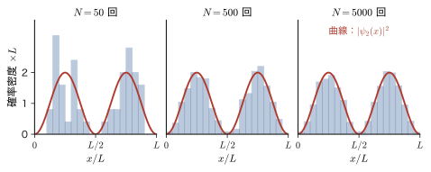
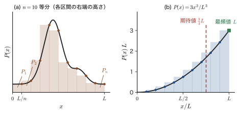
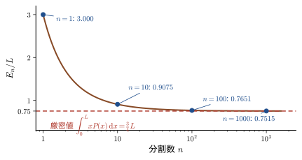
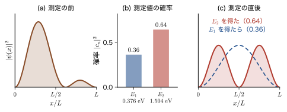
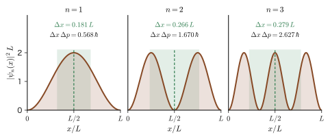
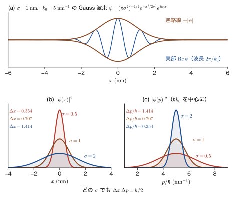
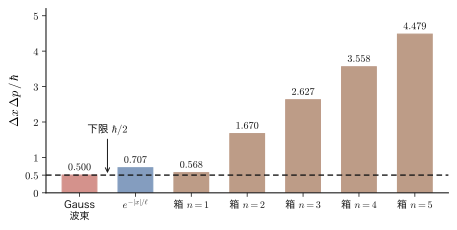
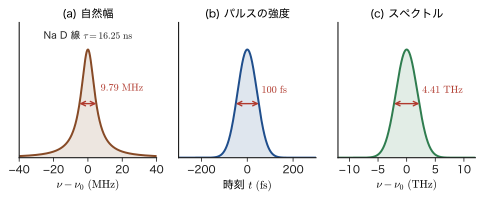

第8章量子力学の公理 — Born の確率解釈・交換関係・不確定性原理
前の章では，1 個ずつ飛ばした電子が，スリットの向こうの検出面のどこに到達するかは予言できず，多数の電子を集めてはじめて $\abs{\psi}^2$ の形の縞（干渉縞や回折の分布）が現れることを見た．では，波動関数 $\psi$ とはいったい何を表す量なのか．この問いに「$\abs{\psi}^2$ は，粒子が見いだされる確率密度である」と答えたのが Born（ボルン）である．この答えは，量子力学でもっとも不思議で，かつもっとも確かな規則の 1 つである．「なぜそうなのか」は，これ以上さかのぼって導くことができない．ほかの規則（物理量は演算子で表される，測定値は固有値だけ，位置と運動量は交換しない，波動関数は Schrödinger（シュレーディンガー）方程式に従って変化する）とあわせて，実験と合うかぎり正しいと認める出発点，すなわち公理（axiom）と呼ばれる．
古典力学（AD 03「大学基礎物理学」）では，粒子の状態は位置 $x$ と運動量 $p$ の組で決まり，Newton の運動方程式が未来を決定した．量子力学では，状態は波動関数 $\psi$ で表され，位置や運動量は確率分布をもつ．したがって，「位置は $x$ である」と言う代わりに，平均値（期待値）$\langle x\rangle$ と，そのまわりのばらつき（標準偏差）$\Delta x$ を語ることになる．そして，位置と運動量は「順序を入れ替えると結果が変わる」ペア（$\hat{x}\hat{p}-\hat{p}\hat{x}=i\hbar$）であり，この事実がそのまま Heisenberg の不確定性原理 $\Delta x\,\Delta p\ge\hbar/2$ を導く．この章では，その導出を，途中の式を 1 行も省略せずに追いかける．不確定性原理は「測定器の性能が悪いから」生じるのではなく，粒子の状態が波であることの数学的な帰結である．
この章は第II部の最後の章にあたり，黒体放射（Planck）から始まった量子論の歴史を，「公理」という形にまとめる．同時に，第III部以降のすべての章で使う道具——規格化，期待値，標準偏差，交換子，固有値と測定——をここで手に入れる．材料科学では，X 線回折や密度汎関数理論の電子密度は $\abs{\psi}^2$ の和であり，走査トンネル顕微鏡（STM）の像は $\abs{\psi}^2$ の空間分布を見ている．発光スペクトルの線幅は励起状態の寿命と不確定性関係で結びつく．ナノ結晶の中の電子の運動エネルギーは，閉じ込めの大きさから不確定性関係で見積もれる．この章は，そのための基礎である．なお，この章では Dirac 記法（ブラとケット）を使わず，すべて積分で書く．Dirac 記法は第10章 10.2で導入する．
章の道筋は次のとおりである．まず，状態と確率（8.1），期待値（8.2），測定の規則（8.3）を述べる．測定の規則は，交換関係が「2 つの物理量を同時に確定できるか」を決める理由（8.4.5）の土台になる．次に，位置と運動量の交換関係（8.4），ばらつきの尺度である標準偏差（8.5）を経て，不確定性原理を導き（8.6），その意味を吟味する（8.7）．最後に，時間発展の公理と，エネルギーと時間の不確定性関係の正しい意味を述べる（8.8）．本書では，量子力学の 3 つの基本原理（第1原理＝Born の確率解釈，第2原理＝位置と運動量の交換関係，第3原理＝時間発展）に，期待値の公理8.2 と測定の公理8.3 を補って，公理8.1〜8.5 と番号を振る．すなわち，第1原理が公理8.1，第2原理が公理8.4，第3原理が公理8.5 である（公理8.2 は，8.3.3 節で公理8.3 から導かれる）．
- Born の確率解釈（公理8.1）を述べ，波動関数の規格化 $\int\abs{\psi}^2\dd\tau=1$ ができること．1 次元・3 次元・球座標で $\dd\tau$ を使い分けられること
- 離散的な期待値から区分求積法を経由して連続的な期待値 $\int xP(x)\dd x$ を導き，量子力学の期待値 $\langle A\rangle=\int\psi^*\hat{A}\psi\dd\tau$ を使いこなせること
- 物理量の測定値が演算子の固有値に限られること，固有関数展開の係数の絶対値の 2 乗が確率になること，測定で波動関数が収縮することを説明できること
- 位置と運動量の交換関係 $\comm{\hat{x}}{\hat{p}}=i\hbar$ を，$\hat{p}=-i\hbar\,\dd/\dd x$ から具体的な関数に作用させて確かめ，交換子の公式で計算できること
- 分散 $(\Delta A)^2=\langle A^2\rangle-\langle A\rangle^2$ と標準偏差を計算し，箱の中の粒子と Gauss 波束で $\Delta x$，$\Delta p$ を求められること
- Schwarz の不等式から Robertson の不等式 $\Delta A\,\Delta B\ge\tfrac12\abs{\langle\comm{\hat{A}}{\hat{B}}\rangle}$ を証明し，$\Delta x\,\Delta p\ge\hbar/2$ を導けること．等号を満たすのが Gauss 波束だけであることを示せること
- 不確定性関係の 3 つの意味（状態の広がり，測定の誤差と擾乱，同時測定）を区別し，エネルギーと時間の不確定性関係の正しい意味（Mandelstam–Tamm，自然幅）を説明できること
もとにしたノート：望月泰英『物理学ノート 量子力学1』 pp. 14–16（p. 14 は白紙）と，期待値（平均値）を扱ったノートの写真 1 枚．
8.1 Born の確率解釈 — 波動関数と確率密度
8.1.1 実験事実から出発する — 波動関数は「見いだされやすさ」を表す
第2章 2.1と第7章で見たことを，もう一度まとめておく．電子を 1 個ずつスリットに向けて飛ばすと，1 個の電子は検出面上のただ 1 点に，粒として現れる．どの点に現れるかは，装置と初期条件をどれだけ正確に整えても予言できない．ところが，同じ実験を何千回もくり返して現れた点を集めると，濃淡のはっきりした縞ができる．その縞の濃さは，波動関数 $\psi(x)$ から計算した $\abs{\psi(x)}^2$ に比例する．「1 回ごとの結果は予言できないが，たくさん集めた分布は予言できる」——これが量子力学の予言の形である．
この状況を，もう少し単純な例で確かめておこう．幅 $L$ の無限井戸の中の粒子（第10章）の $n=2$ の状態は，$\psi_2(x)=\sqrt{2/L}\,\sin(2\pi x/L)$（$0\le x\le L$）である．この状態に用意した電子の位置を，1 回ごとに準備をやり直して $N$ 回測ったとしよう．図8.1は，測定位置を 20 個の区間に分けて数えた結果（計算機で乱数を発生させた模擬データ）である．$N=50$ ではでこぼこだが，$N=5000$ になると，ヒストグラムは $\abs{\psi_2(x)}^2$ の曲線に重なる．

この事実を，量子力学の最初の公理として，次のように述べる．
公理8.1 量子力学の第1原理（Born の確率解釈）
粒子の状態は，波動関数 $\psi$ で表される．波動関数の絶対値の 2 乗 $\abs{\psi}^2=\psi^*\psi$ は，粒子の位置の確率密度である．すなわち，1 次元では，粒子を位置 $x$ と $x+\dd x$ の間に見いだす確率は $\abs{\psi(x)}^2\dd x$ であり，3 次元では，位置 $\bm{r}$ のまわりの微小な体積 $\dd\tau$ の中に見いだす確率は $\abs{\psi(\bm{r})}^2\dd\tau$ である．
ここで $\psi^*$ は $\psi$ の複素共役（$\psi=u+iv$ なら $\psi^*=u-iv$）であり，$\abs{\psi}^2=\psi^*\psi=u^2+v^2\ge0$ は実数である．波動関数そのものは複素数で，直接測定することはできない．測定にかかるのは，2 乗して実数にした $\abs{\psi}^2$ だけである．
イメージ：もっとも不思議な原理 —— Schrödinger は $\psi$ の意味を知らなかった
この原理は，量子力学でもっとも不思議な原理である．Schrödinger 自身も，自分の方程式の解である波動関数が何を表すのかを，初めは知らなかった．1926 年に波動方程式を発表した Schrödinger は，$\psi$ を空間に広がった電荷の雲のようなものと考え，電子は「波束」だと考えようとした．しかし，自由空間の波束は時間とともに広がる一方であり，検出器の上で小さな 1 点として観測される電子の姿と両立しない．この難点を解決したのが，ドイツの物理学者 Born である．Born は，原子による粒子の散乱を波動力学で扱う 1926 年の論文で，「波動関数の絶対値の 2 乗は確率密度である」という大胆な仮説を立てた．この仮説を認めると，驚くほど多くのことが説明できる．原子のスペクトル，化学結合，固体の電気伝導，半導体の光吸収，STM の像，……．Born の規則に反する実験結果は，現在まで見つかっていない．Born は，この仕事などにより，1954 年の Nobel 物理学賞を受けた．
一方で，Einstein は，自然の根本に確率があるという考えになじめなかった．「神はサイコロを振らない」という有名な言葉は，1926 年末に Born にあてた手紙の中の考えを言い直したものである．古典物理の確率（サイコロの目，気体分子の速度分布）は，私たちが詳しい情報を知らないことの反映であり，もっと詳しく知れば結果を予言できる．量子力学の確率は，そうではない．同じ状態に用意した電子でも，位置を測ると 1 回ごとに違う場所に現れ，どれだけ詳しく準備をしても，1 回の結果は決まらない．これが「原理的な確率」であり，Born の規則の不思議さの根本である．
8.1.2 確率密度と確率
公理8.1の言葉を式で書き直す．粒子が区間 $a\le x\le b$ に見いだされる確率は，$\abs{\psi}^2$ をその区間で積分したものである．
\begin{equation} P(a\le x\le b)=\int_a^b\abs{\psi(x)}^2\dd x \label{eq:8-prob} \end{equation}ここで大切なのは，$\abs{\psi(x)}^2$ が「確率」ではなく「確率の密度」であることである．細い針金の質量密度が，それだけでは質量（グラム）でなく，長さを掛けてはじめて質量になるのと同じように，$\abs{\psi(x)}^2$ に区間の長さ $\dd x$ を掛けてはじめて確率になる．特に，1 点にちょうど見いだされる確率は $0$ である．
次元の確認：波動関数の単位
確率は無次元の数なので，$\abs{\psi(x)}^2\dd x$ が無次元であり，1 次元の波動関数 $\psi$ の単位は $\mathrm{m^{-1/2}}$ である．3 次元では $\abs{\psi(\bm{r})}^2\dd\tau$ が無次元だから，$\psi$ の単位は $\mathrm{m^{-3/2}}$ である．たとえば水素原子の基底状態 $\psi_{1s}=(\pi a_0^3)^{-1/2}e^{-r/a_0}$ の $r=0$ での確率密度は $\abs{\psi(0)}^2=1/(\pi a_0^3)=2.15\times10^{30}\ \mathrm{m^{-3}}$（$a_0=5.29\times10^{-11}\ \mathrm{m}$）である．これは，核の位置の体積 $1\ \mathrm{pm^3}=10^{-36}\ \mathrm{m^3}$ の中に電子を見いだす確率が約 $2\times10^{-6}$ であることを意味する．
8.1.3 波動関数の規格化
粒子は，宇宙のどこかには必ず存在する．したがって，全空間で確率密度を足し合わせた（積分した）ものは，ちょうど $1$ にならなければならない．
\begin{equation} \int_{\text{全範囲}}(\text{確率密度})\dd\tau=1\quad\text{だから，}\quad\int_{\text{全範囲}}\abs{\psi}^2\dd\tau=1 \label{eq:8-norm} \end{equation}定義8.1 波動関数の規格化
式 \eqref{eq:8-norm} を満たす波動関数を規格化されている（normalized）といい，この条件を課すことを波動関数の規格化（normalization）という．
補足：体積要素 $\dd\tau$ と「全範囲」
$\psi$ が 1 次元の波動関数の場合は $\dd\tau=\dd x$（全範囲は $-\infty\lt x\lt\infty$）だが，3 次元の場合は $\dd\tau=\dd x\,\dd y\,\dd z$（全範囲は全空間）である．球座標 $(r,\theta,\varphi)$ では $\dd\tau=r^2\sin\theta\,\dd r\,\dd\theta\,\dd\varphi$（$0\le r\lt\infty$，$0\le\theta\le\pi$，$0\le\varphi\lt2\pi$．大学数学 第7章 7.7）であり，円柱座標では $\dd\tau=\rho\,\dd\rho\,\dd\varphi\,\dd z$ である．座標系を変えても確率は変わらないので，$\dd\tau$ にはヤコビアン（$r^2\sin\theta$ や $\rho$）が付く．
規格化の具体的な手順を確認しておく．Schrödinger 方程式は $\psi$ について線形で同次な方程式なので，$f$ が解なら，定数倍 $cf$ も解である．そこで，方程式から求まった解 $f$ に定数 $N$ を掛けた $\psi=Nf$ が規格化されているように $N$ を選ぶ．$N$ を実数の正の数にとることにすれば，
\begin{equation} N^2\int\abs{f}^2\dd\tau=1\quad\Longrightarrow\quad N=\frac{1}{\sqrt{\int\abs{f}^2\dd\tau}} \label{eq:8-Nconst} \end{equation}である．この $N$ を規格化定数という．ただし，この手順が使えるのは，積分 $\int\abs{f}^2\dd\tau$ が有限の値になるとき（$f$ が二乗可積分であるとき）に限られる．なお，$N$ に絶対値 $1$ の複素数（位相因子）を掛けても規格化は保たれる．次に述べるとおり，全体の位相は確率に影響しないので，通常は実数の正の $N$ をとる．
例題8.1 両側指数関数の規格化
電子の波動関数が $\psi(x)=A\,e^{-\abs{x}/\ell}$（$\ell\gt0$ は長さの次元をもつ定数，$A$ は正の定数）で表されるとする．(1) 規格化定数 $A$ を求めよ．(2) $\ell=0.5\ \mathrm{nm}$ として，電子が $\abs{x}\lt\ell$ の範囲に見いだされる確率と，$\abs{x}\gt2\ell$ の範囲に見いだされる確率を求めよ．
解答 (1) $\abs{\psi}^2=A^2e^{-2\abs{x}/\ell}$ は $x$ の偶関数だから，全範囲の積分は $x\gt0$ の積分の 2 倍である．
$$ \int_{-\infty}^{\infty}A^2e^{-2\abs{x}/\ell}\dd x=2A^2\int_0^{\infty}e^{-2x/\ell}\dd x=2A^2\left[-\frac{\ell}{2}e^{-2x/\ell}\right]_0^{\infty}=2A^2\cdot\frac{\ell}{2}=A^2\ell $$これが $1$ に等しいので，$A=1/\sqrt{\ell}$ である（単位は $\mathrm{m^{-1/2}}$ で，8.1.2 節の次元の確認と一致する）．(2) 確率密度は $\abs{\psi}^2=\dfrac{1}{\ell}e^{-2\abs{x}/\ell}$ である．$\abs{x}\lt\ell$ の確率は，式 \eqref{eq:8-prob} より
$$ P(\abs{x}\lt\ell)=2\int_0^{\ell}\frac{1}{\ell}e^{-2x/\ell}\dd x=2\cdot\frac{1}{\ell}\cdot\frac{\ell}{2}\left(1-e^{-2}\right)=1-e^{-2}=0.8647 $$$\abs{x}\gt2\ell$ の確率は，同じ原始関数 $-\dfrac{\ell}{2}e^{-2x/\ell}$ を使って $P(\abs{x}\gt2\ell)=2\displaystyle\int_{2\ell}^{\infty}\dfrac{1}{\ell}e^{-2x/\ell}\dd x=2\cdot\dfrac{1}{\ell}\cdot\dfrac{\ell}{2}e^{-4}=e^{-4}=0.0183$ である（原始関数は $x=2\ell$ で $-\frac{\ell}{2}e^{-4}$，$x\to\infty$ で $0$ なので，定積分は $\frac{\ell}{2}e^{-4}$ である）．約 $86\%$ の確率で $\abs{x}\lt0.5\ \mathrm{nm}$ に見いだされ，$1\ \mathrm{nm}$ より遠くに見いだされる確率は約 $1.8\%$ である．なお，$x=0$ での確率密度は $\abs{\psi(0)}^2=1/\ell=2.0\ \mathrm{nm^{-1}}$ で，最大である．
8.1.4 確率振幅と位相 —— $\abs{\psi}^2$ だけでは決まらない情報
波動関数 $\psi$ は複素数であり，$\abs{\psi}^2$ だけが確率を与える．そのため，$\psi$ に絶対値 $1$ の複素数 $e^{i\alpha}$（$\alpha$ は実数）を掛けても，確率密度は変わらない．
\begin{equation} \abs{e^{i\alpha}\psi}^2=e^{-i\alpha}\psi^*\cdot e^{i\alpha}\psi=\abs{\psi}^2 \label{eq:8-phase} \end{equation}つまり，波動関数の全体の位相は，測定にかからない．$\psi$ と $e^{i\alpha}\psi$ は同じ状態を表す．一方，2 つの波動関数の相対位相は，測定にかかる．二重スリットで，スリット 1 とスリット 2 を通ってきた波の振幅を $\psi_1$，$e^{i\delta}\psi_2$（$\delta$ は 2 つの経路の位相差）とすると，検出面上の確率密度は
\begin{equation} \abs{\psi_1+e^{i\delta}\psi_2}^2=\abs{\psi_1}^2+\abs{\psi_2}^2+2\,\mathrm{Re}\left(e^{i\delta}\psi_1^*\psi_2\right) \label{eq:8-interf} \end{equation}となり，第3項（干渉項）は $\delta$ に依存する．足し合わされるのは確率 $\abs{\psi_1}^2$，$\abs{\psi_2}^2$ ではなく確率振幅 $\psi_1$，$\psi_2$ であり，確率は足し合わせた後で 2 乗してはじめて得られる．これが，量子力学の確率が古典的な確率と決定的に異なる点である．そのため，$\psi$ は「確率振幅」（probability amplitude）とも呼ばれる．
8.1.5 規格化できない波動関数 —— 平面波
すべての波動関数を規格化できるわけではない．運動量が $p=\hbar k$ に確定した自由粒子の平面波 $\psi(x)=e^{ikx}$ を考えよう．$\abs{\psi}^2=1$ は $x$ によらず一定なので，$\int_{-\infty}^{\infty}\abs{\psi}^2\dd x=\infty$ となり，どんな定数を掛けても $1$ にならない．したがって，平面波は，厳密には（公理8.1の意味での）状態を表さない．実際の粒子は，空間のどこかに広がった有限の大きさの波束（8.5 節の Gauss 波束など）であり，平面波は「幅が非常に大きい波束」という理想化である．理想化された平面波も，計算の道具としては不可欠である．平面波を使うときは，次の 2 つの方法のどちらかで，大きさを決める．
- 箱規格化：長さ $L$ の箱（周期境界条件）の中だけに粒子がいるとして，$\psi=L^{-1/2}e^{ikx}$ とおく．$\int_0^L\abs{\psi}^2\dd x=1$ となる（第10章 10.7で使う）．
- 連続規格化：$\psi_p(x)=(2\pi\hbar)^{-1/2}e^{ipx/\hbar}$ とおく．このとき，$\int\psi_{p'}^*\psi_p\dd x=\delta(p-p')$ となる（$\delta$ は Dirac のデルタ関数．大学数学 第30章 30.3）．2 乗の積分は有限でなく $\delta(0)$ となるが，$p$ で積分（重ね合わせ）してはじめて意味をもつ．
以下，特に断らない限り，波動関数は規格化されているものとする．
8.1.6 運動量の確率密度
第2章 2.3で問うた「位置に確率密度があるなら，運動量の確率密度もあるのか」に，ここで答えておく．位置の波動関数 $\psi(x)$ を Fourier 変換した運動量表示の波動関数を，本書の規約（第2章の式）で
\begin{equation} \phi(p)=\frac{1}{\sqrt{2\pi\hbar}}\int_{-\infty}^{\infty}\psi(x)\,e^{-ipx/\hbar}\dd x \label{eq:8-phi} \end{equation}と書くと，$\abs{\phi(p)}^2\dd p$ が，運動量が $p$ から $p+\dd p$ の間にある確率である（公理8.1と同じ形の主張．次の 8.3 節で，これが測定の公理から自然に出てくることを見る）．$\psi$ が規格化されていれば，Parseval の等式 $\int\abs{\phi}^2\dd p=\int\abs{\psi}^2\dd x=1$ により，$\phi$ も自動的に規格化されている．Parseval の等式は，Fourier 変換で「2 乗の積分」が変わらないという事実で，次のように示せる．式 \eqref{eq:8-phi} の $\phi$ とその複素共役を掛けて $p$ で積分し，$\dfrac{1}{2\pi\hbar}\displaystyle\int e^{ip(x-x')/\hbar}\dd p=\delta(x-x')$（デルタ関数．大学数学 第30章 30.3）を使うと，$\displaystyle\int\abs{\phi}^2\dd p=\iint\psi^*(x)\,\psi(x')\,\delta(x-x')\dd x\dd x'=\int\abs{\psi}^2\dd x$ となる．波動関数（の Fourier 変換）$\psi\leftrightarrow\phi$ は，同じ状態の「位置で見た姿」と「運動量で見た姿」である．
例題8.2 両側指数関数の運動量分布
例題8.1 の波動関数 $\psi(x)=\ell^{-1/2}e^{-\abs{x}/\ell}$ の運動量表示 $\phi(p)$ を求めよ．また，運動量の大きさが $\abs{p}\lt\hbar/\ell$ である確率を求めよ．
解答 式 \eqref{eq:8-phi} に代入し，積分を $x\lt0$ と $x\gt0$ に分ける．
$$ \int_{-\infty}^{0}e^{x/\ell}e^{-ipx/\hbar}\dd x=\int_{-\infty}^{0}e^{(1/\ell-ip/\hbar)x}\dd x=\frac{1}{1/\ell-ip/\hbar},\qquad \int_{0}^{\infty}e^{-(1/\ell+ip/\hbar)x}\dd x=\frac{1}{1/\ell+ip/\hbar} $$（$x\to-\infty$ で $e^{x/\ell}\to0$，$x\to+\infty$ で $e^{-x/\ell}\to0$ だから，無限遠での境界項は $0$ である．位相因子 $e^{\mp ipx/\hbar}$ は絶対値が $1$ なので，収束は $e^{\pm x/\ell}$ だけで決まる．）2 つを足すと，共通の分母 $(1/\ell)^2+(p/\hbar)^2$ をもつ分数にまとめられて
$$ \frac{1}{1/\ell-ip/\hbar}+\frac{1}{1/\ell+ip/\hbar}=\frac{2/\ell}{(1/\ell)^2+(p/\hbar)^2}=\frac{2\ell}{1+(p\ell/\hbar)^2} $$である．したがって，係数 $\dfrac{1}{\sqrt{2\pi\hbar}}\cdot\dfrac{1}{\sqrt{\ell}}$ を掛けて
$$ \phi(p)=\frac{1}{\sqrt{2\pi\hbar\ell}}\cdot\frac{2\ell}{1+(p\ell/\hbar)^2}=\sqrt{\frac{2\ell}{\pi\hbar}}\;\frac{1}{1+(p\ell/\hbar)^2} $$となる．位置の分布が $x=0$ で尖っている（折れ曲がっている）ため，運動量の分布は，Gauss 関数のように速やかに減衰せず，$1/p^4$ でゆっくり減衰する．規格化を確かめよう．$u=p\ell/\hbar$ とおくと $\dd p=(\hbar/\ell)\dd u$ で，$\displaystyle\int_{-\infty}^{\infty}\frac{\dd u}{(1+u^2)^2}=\frac{\pi}{2}$ を使って
$$ \int_{-\infty}^{\infty}\abs{\phi}^2\dd p=\frac{2\ell}{\pi\hbar}\cdot\frac{\hbar}{\ell}\int_{-\infty}^{\infty}\frac{\dd u}{(1+u^2)^2}=\frac{2}{\pi}\cdot\frac{\pi}{2}=1 $$となり，Parseval の等式が成り立っている．$\abs{p}\lt\hbar/\ell$ すなわち $\abs{u}\lt1$ の確率は，原始関数 $\displaystyle\int\frac{\dd u}{(1+u^2)^2}=\frac{u}{2(1+u^2)}+\frac{1}{2}\arctan u$ を使って
$$ P(\abs{p}\lt\hbar/\ell)=\frac{2}{\pi}\int_{-1}^{1}\frac{\dd u}{(1+u^2)^2}=\frac{2}{\pi}\cdot2\left(\frac{1}{4}+\frac{\pi}{8}\right)=\frac{1}{\pi}+\frac{1}{2}=0.818 $$である．運動量の分布は，$\hbar/\ell$ 程度の範囲におよそ $82\%$ が入る．位置の広がりが $\ell$ 程度なら，運動量の広がりは $\hbar/\ell$ 程度である（8.5 節，8.6 節で正確に見る）．
例題8.3 3 次元の規格化（水素の 2p 軌道）
3 次元の波動関数 $\psi(r,\theta,\varphi)=N\,r\,e^{-r/2a_0}\cos\theta$（$a_0$ は Bohr 半径，$N$ は正の定数）を規格化せよ．
解答 球座標では $\dd\tau=r^2\sin\theta\,\dd r\,\dd\theta\,\dd\varphi$ である．$\abs{\psi}^2=N^2r^2e^{-r/a_0}\cos^2\theta$ を代入すると，積分は $r$，$\theta$，$\varphi$ の 3 つの積に分かれる．
$$ \int\abs{\psi}^2\dd\tau=N^2\int_0^{\infty}r^4e^{-r/a_0}\dd r\;\int_0^{\pi}\cos^2\theta\,\sin\theta\dd\theta\;\int_0^{2\pi}\dd\varphi $$各積分を計算する．第 1 の積分は，公式 $\int_0^{\infty}r^ne^{-r/a}\dd r=n!\,a^{n+1}$ より $4!\,a_0^5=24a_0^5$．第 2 の積分は，$\cos\theta=t$ とおくと $-\sin\theta\dd\theta=\dd t$ だから $\int_{-1}^{1}t^2\dd t=\dfrac{2}{3}$．第 3 の積分は $2\pi$．よって
$$ \int\abs{\psi}^2\dd\tau=N^2\cdot24a_0^5\cdot\frac{2}{3}\cdot2\pi=32\pi a_0^5N^2=1 \qquad\Longrightarrow\qquad N=\frac{1}{\sqrt{32\pi\,a_0^5}} $$である．この波動関数は，水素原子の $2p_z$ 軌道（第16章）である．$N$ の単位は $\mathrm{m^{-5/2}}$，$\psi$ の単位は $N\cdot r\cdot1=\mathrm{m^{-3/2}}$ で，8.1.2 節の次元の確認と一致する．
応用：電子密度と STM の像 —— 材料科学で観測される $\abs{\psi}^2$
電子が $N$ 個ある物質では，位置 $\bm{r}$ の近くの電子の密度 $\rho(\bm{r})$ は，各電子の $\abs{\psi_i(\bm{r})}^2$ を足し合わせたものになる（占有された軌道について，スピンの向きも含めて足す）．X 線回折で観測されるのはこの電子密度であり，結晶の X 線回折データから電子密度分布を再構成したり，密度汎関数理論（AD 07）で電子密度そのものを主役にして基底状態を求めたりする．また，走査トンネル顕微鏡（STM）では，金属の探針を表面から $1\ \mathrm{nm}$ 程度まで近づけて流れるトンネル電流を測る．この電流は，探針の位置での，表面の電子の波動関数の $\abs{\psi}^2$（Fermi 準位付近の状態の分）にほぼ比例する（Tersoff–Hamann の理論）．表面から真空側にしみ出した波動関数の裾は，距離とともに指数関数的に減衰するので，電流は探針の高さに非常に敏感で，原子 1 個の凹凸を描き出せる．公理8.1の確率密度は，このように，ナノの世界の像として実際に「見える」量である（トンネル効果は第12章）．
関連シミュレーター：確率の期待値 — サイコロの目から $|\psi|^2$ まで．確率密度と期待値の関係を，サイコロから波動関数まで段階的に確かめられる．
8.2 期待値 — 離散から連続へ，そして量子力学へ
波動関数の $\abs{\psi}^2$ が確率密度だとわかったので，次に，「粒子の位置の平均値は何か」という問いに答えたい．一般に，確率的に決まる量の平均値を期待値（expectation value）という．この節では，まず高校で習った離散的な期待値から出発し，区分求積法（積分の定義）を経由して，連続的な確率変数の期待値 $\int xP(x)\dd x$ を導く．その後で，これが量子力学の期待値の式に一直線につながることを見る．数学の側面は，姉妹編 AD 02 の第14章でも扱った．この節では，量子力学で使う形に合わせて，順に書き直す．
8.2.1 離散的な確率変数の期待値
定義8.2 期待値（平均値）
確率変数 $X$ が値 $x_1,x_2,\dots,x_n$ をとり，それらの値をとる確率がそれぞれ $p_1,p_2,\dots,p_n$（$p_k\ge0$，$\sum_{k=1}^{n}p_k=1$）であるとき，$X$ の期待値は
\begin{equation} E[X]=\sum_{k=1}^{n}x_k\,p_k \label{eq:8-Ediscrete} \end{equation}である．確率変数が連続的な値をとる場合は，
\begin{equation} E=\int_{-\infty}^{\infty}x\,P(x)\dd x \label{eq:8-Econt} \end{equation}である．$P(x)$ は確率密度で，$x_k$ の近くの幅 $x_{k+1}-x_k$ の区間に値をとる確率は $p_k=P(x_k)\,(x_{k+1}-x_k)$ である．
この節の $E$ は，Expectation（期待値）の頭文字であり，エネルギーではない．式 \eqref{eq:8-Ediscrete} は，値 $x_k$ を確率 $p_k$ で重みづけして足した加重平均である．たとえばサイコロでは $x_k=k$，$p_k=1/6$ だから $E[X]=(1+2+3+4+5+6)/6=3.5$ である．3.5 の目は決して出ないので，期待値は「1 回の試行で得られる値」ではなく，「多数回の試行の平均」である．測定値が 1 回ごとにばらつき，多数回の測定の分布が確率密度で決まる様子は，第1章 1.1の図1.4 に示した．$n$ 個の値の和として表した期待値を，$E_n$ と添字を付けて書くこともある（8.2.2 節と例題8.4 の $E_n$ は，区間を $n$ 等分して和をとったものである）．量子力学では，$E$ の代わりに $\langle X\rangle$（角括弧）と書く習慣がある．以下，量子力学の期待値には $\langle\ \rangle$ を使う．
8.2.2 連続的な確率変数へ — $n$ 等分から区分求積法へ
離散の式 \eqref{eq:8-Ediscrete} から連続の式 \eqref{eq:8-Econt} が出てくる筋道を，具体的に追いかけよう．ある区間 $0\le x\le L$ で確率変数（たとえば粒子の位置）を定義する．この区間を $n$ 等分して，各小区間の右端の値で代表させれば，確率変数は
$$ X=\frac{1}{n}L,\ \frac{2}{n}L,\ \dots,\ \frac{n}{n}L $$という $n$ 個の離散的な値をとる，と考えることができる．$k$ 番目の値 $\dfrac{k}{n}L$ をとる確率（$k$ 番目の小区間に位置がある確率）を $p_k$ とすれば，確率の和は $1$ であり，期待値は式 \eqref{eq:8-Ediscrete} より
\begin{equation} \sum_{k=1}^{n}p_k=1,\qquad E=\sum_{k=1}^{n}\frac{k}{n}L\cdot p_k \label{eq:8-Esum} \end{equation}となる．ここで $n\to\infty$ の極限をとる．小区間が限りなく細かくなり，離散的な値の集まりが連続的な値になる．この極限が積分で表せるのは，区分求積法のおかげである．
数学の道具：区分求積法（大学数学 第14章 14.3）
関数 $f(x)$ の区間 $0\le x\le L$ での積分は，区間を $n$ 等分した細長い長方形の面積の和の極限として定義される．長方形の幅が $\dfrac{L}{n}$，$k$ 番目の長方形の右端が $x=\dfrac{k}{n}L$ だから，
\begin{equation} \lim_{n\to\infty}\sum_{k=1}^{n}f\!\left(\frac{k}{n}L\right)\frac{L}{n}=\int_0^Lf(x)\dd x \label{eq:8-riemann} \end{equation}である．左辺で $\dfrac{k}{n}L$ が積分の変数 $x$ に，$\dfrac{L}{n}$ が $\dd x$ に対応する．
確率密度 $P(x)$ を使えば，$k$ 番目の小区間に位置がある確率は，高さ $P\!\left(\dfrac{k}{n}L\right)$（確率密度），幅 $\dfrac{L}{n}$ の細長い長方形の面積，すなわち
\begin{equation} p_k=P\!\left(\frac{k}{n}L\right)\cdot\frac{L}{n} \label{eq:8-pk} \end{equation}で与えられる（図8.2 (a)．図では，各長方形の高さを $P_1,P_2,\dots,P_n$ と書いた）．これを式 \eqref{eq:8-Esum} の $\sum p_k=1$ に代入して，$n\to\infty$ とすると，区分求積法の式 \eqref{eq:8-riemann}（$f=P$）により，確率密度の規格化条件が得られる．
$$ \sum_{k=1}^{n}p_k=\sum_{k=1}^{n}\underbrace{P\!\left(\frac{k}{n}L\right)}_{\text{確率密度}}\cdot\frac{L}{n}=1 \quad\xrightarrow{\ n\to\infty\ }\quad \int_0^LP(x)\dd x=1 $$これは，波動関数の規格化 $\int\abs{\psi}^2\dd x=1$（式 \eqref{eq:8-norm}）で $P=\abs{\psi}^2$ とおいたものにほかならない．同様に，期待値の式 \eqref{eq:8-Esum} に式 \eqref{eq:8-pk} を代入して $n\to\infty$ とすると，被積分関数 $f(x)=xP(x)$ について区分求積法が使えて，
\begin{equation} E=\lim_{n\to\infty}\sum_{k=1}^{n}\frac{k}{n}L\cdot p_k=\lim_{n\to\infty}\sum_{k=1}^{n}\frac{k}{n}L\cdot P\!\left(\frac{k}{n}L\right)\frac{L}{n}=\int_0^LxP(x)\dd x \label{eq:8-EcontL} \end{equation}を得る．これが，連続的な確率変数をもったときの期待値である．

注意：$\sum p_k=1$ が厳密に成り立つのは，どういうときか
式 \eqref{eq:8-pk} の $p_k=P(kL/n)\cdot L/n$ は，$k$ 番目の小区間の右端の高さで代表させた近似であり，$n$ が有限のときは $\sum p_k$ は厳密には $1$ にならない（下の例題8.4 で見る）．$k$ 番目の小区間の確率を $p_k=\int_{(k-1)L/n}^{kL/n}P(x)\dd x$ と正確に定義すれば $\sum p_k=1$ が厳密に成り立ち，式 \eqref{eq:8-pk} はそのよい近似である．代表点を右端でなく左端や中点にとっても，$n\to\infty$ で同じ積分になる．
例題8.4 区分求積法で期待値を近似する
区間 $0\le x\le L$ の確率密度が $P(x)=3x^2/L^3$ であるとする（$\int_0^LP\dd x=1$ を確かめよ）．(1) 区間を $n$ 等分したときの期待値の和（式 \eqref{eq:8-Esum} の $E$ を $E_n$ と書いた）$E_n=\sum_{k=1}^{n}\dfrac{k}{n}L\cdot P\!\left(\dfrac{k}{n}L\right)\dfrac{L}{n}$ を $n$ の式で表せ．(2) $n=10,100,1000$ で $E_n/L$ を求め，$n\to\infty$ の極限が厳密な期待値 $\int_0^LxP\dd x$ に一致することを確かめよ．
解答 規格化は $\int_0^L\dfrac{3x^2}{L^3}\dd x=\dfrac{3}{L^3}\cdot\dfrac{L^3}{3}=1$ である．(1) $x=kL/n$ を代入すると，各項は $\dfrac{kL}{n}\cdot\dfrac{3}{L^3}\left(\dfrac{kL}{n}\right)^2\cdot\dfrac{L}{n}=\dfrac{3L}{n^4}k^3$ となる．和の公式 $\sum_{k=1}^{n}k^3=\left[\dfrac{n(n+1)}{2}\right]^2=\dfrac{n^2(n+1)^2}{4}$ を使って
$$ E_n=\frac{3L}{n^4}\sum_{k=1}^{n}k^3=\frac{3L}{n^4}\cdot\frac{n^2(n+1)^2}{4}=\frac{3L}{4}\left(1+\frac{1}{n}\right)^2 $$である．(2) $n=10$ で $\dfrac{3}{4}(1.1)^2=0.9075$，$n=100$ で $\dfrac{3}{4}(1.01)^2=0.7651$，$n=1000$ で $\dfrac{3}{4}(1.001)^2=0.7515$ となり，$E_n/L$ は $n$ が大きくなるとともに $\dfrac{3}{4}$ に近づく．極限は $\lim_{n\to\infty}E_n=\dfrac{3L}{4}$ である．一方，厳密な期待値は $\int_0^LxP(x)\dd x=\dfrac{3}{L^3}\int_0^Lx^3\dd x=\dfrac{3}{L^3}\cdot\dfrac{L^4}{4}=\dfrac{3L}{4}$ で，確かに一致する．なお，確率の和 $\sum p_k=\dfrac{3}{n^3}\sum k^2=\dfrac{(n+1)(2n+1)}{2n^2}$ は，$n=10$ で $1.155$，$n=100$ で $1.015$ と，$1$ より少し大きい（$P$ が増加関数で，右端の高さは過大評価になるため）．これも $n\to\infty$ で $1$ に近づく．

8.2.3 量子力学の期待値 —— 確率密度の間に演算子をはさむ
連続的な期待値の式 \eqref{eq:8-EcontL} に，確率密度 $P(x)=\abs{\psi(x)}^2$ を代入すると，粒子の位置の期待値は
\begin{equation} \langle x\rangle=\int_{-\infty}^{\infty}x\,\abs{\psi(x)}^2\dd x=\int_{-\infty}^{\infty}\psi^*\,x\,\psi\dd x \label{eq:8-xexp} \end{equation}となる（積分範囲を全範囲に広げた．$0\le x\le L$ の外で $P=0$ とみなせば同じである）．最後の形では，確率密度 $\psi^*\psi$ の 2 つの $\psi$ の間に，座標 $x$ を掛ける演算子 $\hat{x}$ が挟まっている．運動量の期待値も同じ形の式で書けるとするのが，次の公理である．ここで演算子（operator）とは，関数を別の関数に変える操作のことである．「$x$ を掛ける」「$x$ で微分する」がその例で，操作を表す記号にハット（$\hat{\ }$）を付けて，$\hat{x}$，$\hat{p}$ のように書く．
公理8.2 物理量の期待値
物理量 $A$ に，演算子 $\hat{A}$ が対応する．波動関数 $\psi$（規格化されているもの）で表される状態にある粒子について，物理量 $A$ を測定したときの平均値（期待値）は，
\begin{equation} \langle A\rangle=\int_{\text{全範囲}}\psi^*\,\hat{A}\,\psi\dd\tau \label{eq:8-expval} \end{equation}である．位置と運動量には，$\hat{x}=x\times$（$x$ を掛ける），$\hat{p}=-i\hbar\dfrac{\partial}{\partial x}$（3 次元では $\hat{\bm{p}}=-i\hbar\nabla$）が対応する．
なぜ運動量が微分の形をしているのかは，平面波に作用させるとわかる．平面波 $e^{ikx}$ に $-i\hbar\,\dd/\dd x$ を作用させると，$-i\hbar\cdot ik\,e^{ikx}=\hbar k\,e^{ikx}$ となり，波数 $k$ の平面波が，運動量 $p=\hbar k$（de Broglie の関係，第6章 6.2）の状態として現れる．$\hat{p}$ の導入の詳しい経緯は，第9章 9.2で扱う．
式 \eqref{eq:8-expval} を，位置と運動量について具体的に書けば，
\begin{equation} \langle x\rangle=\int_{\text{全範囲}}\psi^*\,\hat{x}\,\psi\dd\tau,\qquad \langle p\rangle=\int_{\text{全範囲}}\psi^*\,\hat{p}\,\psi\dd\tau \label{eq:8-xpexp} \end{equation}である．左辺の $\langle x\rangle$，$\langle p\rangle$ には，ハット（$\hat{\ }$）が付かない．期待値は（測定値と同じ）ただの実数であり，演算子ではないからである．本書では，演算子にはハット，数（$c$ 数）にはハットなしという約束を，全巻で守る．
なぜ $\psi^*$ と $\psi$ で挟むのか — 演算子の順序が大切
式 \eqref{eq:8-expval} は，確率密度 $\abs{\psi}^2=\psi^*\psi$ の 2 つの $\psi$ の間に演算子を入れたものである．演算子 $\hat{A}$ は，右にある関数 $\psi$ に作用して新しい関数 $\hat{A}\psi$ を作る．たとえば $\hat{p}\psi=-i\hbar\,\dd\psi/\dd x$ は，$\psi$ を微分した関数である．その関数と $\psi^*$ を掛けて全範囲で積分すると，1 つの数が得られる．演算子は左側の $\psi^*$ には作用させない．$\hat{p}$ を $\psi^*$ に作用させたもの $\int(\hat{p}\psi^*)\psi\dd x$ は，部分積分すると $-\langle p\rangle$ になってしまい，符号がまちがった値になる．
$\hat{x}$ の場合は，$x$ が単なる数の掛け算なので，$\psi^*x\psi=x\abs{\psi}^2$ と順序は関係ない．一方 $\hat{p}$ は微分演算子なので，順序をまちがえてはいけない．
運動量の期待値の式が，実際に「運動量の確率密度による平均」と一致することを確かめておこう．運動量の確率密度は $\abs{\phi(p)}^2$（式 \eqref{eq:8-phi}）なので，$\langle p\rangle$ は $\int p\abs{\phi(p)}^2\dd p$ に等しいはずである．
導出：$\displaystyle\int\psi^*\hat{p}\psi\dd x=\int p\,\abs{\phi(p)}^2\dd p$
逆 Fourier 変換 $\psi(x)=\dfrac{1}{\sqrt{2\pi\hbar}}\displaystyle\int\phi(p')e^{ip'x/\hbar}\dd p'$ を $x$ で微分し，$-i\hbar$ を掛けると，指数関数の微分から $ip'/\hbar$ が出るので
$$ \hat{p}\psi=-i\hbar\frac{\partial\psi}{\partial x}=\frac{1}{\sqrt{2\pi\hbar}}\int p'\,\phi(p')\,e^{ip'x/\hbar}\dd p' $$となる．$\psi^*=\dfrac{1}{\sqrt{2\pi\hbar}}\displaystyle\int\phi^*(p)e^{-ipx/\hbar}\dd p$ を掛けて $x$ で積分すると，積分の順序を入れ替えて
$$ \int\psi^*\hat{p}\psi\dd x=\iint\phi^*(p)\,p'\phi(p')\left[\frac{1}{2\pi\hbar}\int e^{i(p'-p)x/\hbar}\dd x\right]\dd p\,\dd p' $$となる．角括弧の中は Dirac のデルタ関数 $\delta(p'-p)$（大学数学 第30章 30.3）だから，$p'$ の積分が実行できて $p'=p$ となり，
$$ \int\psi^*\hat{p}\psi\dd x=\int\phi^*(p)\,p\,\phi(p)\dd p=\int p\,\abs{\phi(p)}^2\dd p $$を得る．位置表示で「$\psi^*(-i\hbar\,\partial_x)\psi$」を積分することと，運動量表示で「$p$ を確率密度 $\abs{\phi}^2$ で重みづけ平均」することが，同じ値を与える．
（導出終わり）
公理8.2は，1 回の測定の値ではなく，同じ状態に用意した多数の粒子（アンサンブル）について測った値の平均を与える．また，規格化されていない波動関数 $\psi$ に対しては，$\langle A\rangle=\dfrac{\int\psi^*\hat{A}\psi\dd\tau}{\int\psi^*\psi\dd\tau}$ と，分母で割る．なお，期待値が実数になること（測定値は実数）は，演算子 $\hat{A}$ がエルミートであることから従う（8.3 節と 8.4 節）．
8.2.4 期待値は「もっとも出やすい値」ではない
期待値と，確率がもっとも大きい値（最頻値）は，一般には別のものである．サイコロの期待値 $3.5$ は，決して出ない目である．図8.2 (b) の $P(x)=3x^2/L^3$ でも，確率密度が最大になる位置は $x=L$ だが，期待値は $\frac{3}{4}L$ である．量子力学の重要な例は，水素原子の基底状態（1s）である．電子を核から距離 $r$ と $r+\dd r$ の間の球殻に見いだす確率は，$\abs{\psi_{1s}}^2\cdot4\pi r^2\dd r$ で，動径分布は $P(r)=\dfrac{4r^2}{a_0^3}e^{-2r/a_0}$（第17章）である．これを微分して $0$ とおくと，もっとも見いだされやすい距離（最確半径）は $r=a_0$ であるが，期待値は，$\langle r\rangle=\displaystyle\int_0^{\infty}rP(r)\dd r=\dfrac{4}{a_0^3}\displaystyle\int_0^{\infty}r^3e^{-2r/a_0}\dd r=\dfrac{4}{a_0^3}\cdot3!\left(\dfrac{a_0}{2}\right)^4=\dfrac{3}{2}a_0$ と，$a_0$ より大きい．分布が右に長い裾をひくためである．
また，$\psi$ が演算子 $\hat{A}$ の固有関数（$\hat{A}\psi=a\psi$，$a$ は固有値）であれば，$\langle A\rangle=\int\psi^*(a\psi)\dd\tau=a\int\abs{\psi}^2\dd\tau=a$ となり，期待値は固有値そのものである．このとき，物理量 $A$ の測定値は 1 回ごとにばらつかず，いつも $a$ である（8.3 節）．
例題8.5 箱の中の粒子と平面波の期待値
(1) 幅 $L$ の無限井戸の基底状態 $\psi_1(x)=\sqrt{2/L}\,\sin(\pi x/L)$（$0\le x\le L$）について，$\langle x\rangle$，$\langle p\rangle$，$\langle p^2\rangle$ を求めよ．(2) 平面波 $\psi(x)=e^{ik_0x}$（規格化されていない）について，$\langle p\rangle$ を求めよ．
解答 (1) 位置：$\langle x\rangle=\dfrac{2}{L}\displaystyle\int_0^Lx\sin^2\dfrac{\pi x}{L}\dd x$．倍角の公式 $\sin^2\theta=\dfrac{1-\cos2\theta}{2}$ を使うと $\dfrac{1}{L}\displaystyle\int_0^Lx\left(1-\cos\dfrac{2\pi x}{L}\right)\dd x$ で，第 1 項は $\dfrac{1}{L}\cdot\dfrac{L^2}{2}=\dfrac{L}{2}$．第 2 項は，部分積分で $\displaystyle\int_0^Lx\cos\dfrac{2\pi x}{L}\dd x=\left[\dfrac{Lx}{2\pi}\sin\dfrac{2\pi x}{L}\right]_0^L-\dfrac{L}{2\pi}\displaystyle\int_0^L\sin\dfrac{2\pi x}{L}\dd x=0-0=0$ なので，$\langle x\rangle=\dfrac{L}{2}$．中心である（$\abs{\psi_1}^2$ が中心について対称なので当然の結果）．
運動量：$\hat{p}\psi_1=-i\hbar\sqrt{\dfrac{2}{L}}\dfrac{\pi}{L}\cos\dfrac{\pi x}{L}$ だから，$\langle p\rangle=-i\hbar\dfrac{2}{L}\dfrac{\pi}{L}\displaystyle\int_0^L\sin\dfrac{\pi x}{L}\cos\dfrac{\pi x}{L}\dd x=-i\hbar\dfrac{2\pi}{L^2}\cdot\dfrac{1}{2}\displaystyle\int_0^L\sin\dfrac{2\pi x}{L}\dd x=0$（$\sin\theta\cos\theta=\frac12\sin2\theta$ を使い，1 周期分の積分が $0$）．別の見方では，$\psi_1$ が実数なので $\psi^*\hat{p}\psi=-i\hbar\,\psi\psi'=-\dfrac{i\hbar}{2}(\psi^2)'$ となり，全範囲の積分は $-\dfrac{i\hbar}{2}\left[\psi^2\right]_0^L=0$（壁で $\psi=0$）．実数の波動関数では，$\langle p\rangle$ は必ず $0$ である．運動量は，右向きと左向きの平面波（$\pm\pi\hbar/L$）の半々の重ね合わせだからである．
運動量の 2 乗：$\hat{p}^2\psi_1=-\hbar^2\psi_1''=\hbar^2\left(\dfrac{\pi}{L}\right)^2\psi_1$ だから，$\psi_1$ は $\hat{p}^2$ の固有関数で，$\langle p^2\rangle=\left(\dfrac{\pi\hbar}{L}\right)^2\displaystyle\int\abs{\psi_1}^2\dd x=\left(\dfrac{\pi\hbar}{L}\right)^2$（確認：直接計算 $\hbar^2\displaystyle\int_0^L\abs{\psi_1'}^2\dd x=\hbar^2\dfrac{2}{L}\dfrac{\pi^2}{L^2}\cdot\dfrac{L}{2}$ も同じ値）．これは，第2章 2.2の結果 $\sqrt{\langle p^2\rangle}=\pi\hbar/L$ である．
(2) $\hat{p}\,e^{ik_0x}=-i\hbar\cdot ik_0e^{ik_0x}=\hbar k_0\,e^{ik_0x}$ なので，平面波は運動量の固有関数（固有値 $\hbar k_0$）である．$\psi^*\hat{p}\psi=\hbar k_0\abs{\psi}^2$ となり，規格化されていないので分母の $\int\abs{\psi}^2\dd x$ で割ると，$\langle p\rangle=\hbar k_0$．運動量は，いつも（ばらつかず）$p=\hbar k_0$ である．これが de Broglie の関係 $p=\hbar k$ の内容である．
箱の中の粒子の位置・運動量の広がりの詳しい計算は，8.5 節で行う．期待値を第III部で使うときの計算の道具は，第10章 10.4にまとめてある．関連シミュレーター：確率の期待値と，量子力学の「平均値」 — サイコロの目から $\langle x\rangle=\int\psi^*\hat{x}\psi\,\dd x$ まで．サイコロの期待値から，量子力学の $\langle x\rangle$ までを順に解説している．
8.3 物理量と測定 — 固有値・固有関数・波動関数の収縮
公理8.1は，位置を測ったときの結果の確率を与える．では，運動量やエネルギーなど，位置以外の物理量を測ったときは，どのような値が，どのような確率で得られるのか．第2章で予告したとおり，この問いの答えが「固有値・固有関数・測定」の一般論である．期待値の公理8.2を，より詳しい主張（測定値の分布そのもの）に拡張することになる．この節は，量子力学の測定の規則をまとめた重要な節であり，8.4 節以降の交換関係と不確定性原理の意味を理解するための土台でもある．
8.3.1 固有値方程式
演算子 $\hat{A}$ が，ある関数 $u$（$u\not\equiv0$）に作用して，$u$ の定数倍を与えるとき，すなわち
\begin{equation} \hat{A}\,u(\bm{r})=a\,u(\bm{r}) \label{eq:8-eigen} \end{equation}と書けるとき，$u$ を $\hat{A}$ の固有関数（eigenfunction），定数 $a$ を $u$ に対応する固有値（eigenvalue）という．式 \eqref{eq:8-eigen} を固有値方程式という．行列の固有値問題 $A\bm{v}=\lambda\bm{v}$（大学数学 第12章 12.1）の，関数に対する版である（関数は，無限に多くの成分をもつベクトルと考えられる）．固有値は，$\hat{A}$ ごとに決まる特別な数であり，波動関数に依存しない．
定義8.3 固有関数と固有値
演算子 $\hat{A}$ に対して，式 \eqref{eq:8-eigen} を満たす $0$ でない関数 $u$ を $\hat{A}$ の固有関数といい，$a$ をその固有値という．
例を挙げる．(i) 運動量演算子 $\hat{p}=-i\hbar\,\dd/\dd x$ の固有関数は平面波である：$\hat{p}\,e^{ikx}=\hbar k\,e^{ikx}$（8.2 節の例題8.5）．固有値 $\hbar k$ は，連続的に変化するすべての実数値をとる．(ii) 座標演算子 $\hat{x}=x\times$ の固有値方程式 $x\,u(x)=x_0u(x)$，すなわち $(x-x_0)u(x)=0$ は，$x\ne x_0$ で $u=0$ を要求する．$x=x_0$ に鋭いピークをもつデルタ関数 $u(x)=\delta(x-x_0)$ が，固有関数（固有値 $x_0$）の役割を果たす．デルタ関数は通常の意味の関数ではなく，規格化もできない（$\int\delta^2\dd x=\infty$）ので，平面波と同じく理想化された固有関数である．(iii) エネルギーの演算子（Hamilton 演算子）$\hat{H}$ の固有値方程式 $\hat{H}\psi=E\psi$ が，時間を含まない Schrödinger 方程式である（第9章）．箱の中の粒子の $\hat{H}$ の固有値 $E_n=n^2h^2/(8mL^2)$ は，とびとびの値である．
8.3.2 エルミート演算子
物理量の測定値は実数でなければならない．そこで，測定値（固有値）が必ず実数になるような演算子だけが，物理量に対応するとする．そのための十分条件を与えるのが，エルミート性である．
定義8.4 エルミート演算子
任意の（十分になめらかで，遠方で速やかに $0$ になる）関数 $f$，$g$ に対して
\begin{equation} \int f^*\,(\hat{A}g)\dd\tau=\int(\hat{A}f)^*\,g\dd\tau \label{eq:8-herm} \end{equation}が成り立つとき，$\hat{A}$ をエルミート演算子（Hermitian operator）という．
行列でいえば，エルミート行列 $H^\dagger=H$（$H_{ij}=H_{ji}^*$）にあたる．$\hat{x}$ は，$x$ が実数（$x^*=x$）なので，$\displaystyle\int f^*(xg)\dd\tau=\int(xf)^*g\dd\tau$ が成り立ち，式 \eqref{eq:8-herm} を満たす．$\hat{p}$ がエルミートであることは，部分積分で示され，8.4 節の例題8.8 で確かめる．エルミート演算子の固有値と固有関数には，次の性質がある．
定理8.1 エルミート演算子の固有値と固有関数
エルミート演算子 $\hat{A}$ について，(i) 固有値はすべて実数である．(ii) 異なる固有値に対応する固有関数は，互いに直交する（$\int u_1^*u_2\dd\tau=0$）．
証明
(i) $\hat{A}u=au$ とする．式 \eqref{eq:8-herm} で $f=g=u$ とおくと，左辺は $\int u^*(\hat{A}u)\dd\tau=a\int\abs{u}^2\dd\tau$，右辺は $\int(\hat{A}u)^*u\dd\tau=\int(au)^*u\dd\tau=a^*\int\abs{u}^2\dd\tau$ である．$\int\abs{u}^2\dd\tau\gt0$ なので $a=a^*$，すなわち $a$ は実数である．
(ii) $\hat{A}u_1=a_1u_1$，$\hat{A}u_2=a_2u_2$，$a_1\ne a_2$ とする．式 \eqref{eq:8-herm} で $f=u_1$，$g=u_2$ とおくと，左辺は $a_2\int u_1^*u_2\dd\tau$，右辺は $a_1^*\int u_1^*u_2\dd\tau=a_1\int u_1^*u_2\dd\tau$（(i) より $a_1$ は実数）である．したがって $(a_2-a_1)\int u_1^*u_2\dd\tau=0$ であり，$a_1\ne a_2$ だから $\int u_1^*u_2\dd\tau=0$ を得る．
（証明終わり）
固有値が同じで異なる固有関数（縮退，第10章 10.3）がある場合でも，それらの 1 次結合を適当にとれば直交する関数の組にできる（Gram–Schmidt の直交化）．以下では，簡単のため，固有値に縮退がない場合を主に考える．固有関数は規格化しておく．こうして，$\hat{A}$ の固有関数の組 $\{u_n\}$ を，規格直交系（orthonormal system）
\begin{equation} \int u_m^*\,u_n\dd\tau=\delta_{mn}\qquad(\delta_{mn}=1\ (m=n),\ 0\ (m\ne n)) \label{eq:8-orthonormal} \end{equation}にとることができる．$\delta_{mn}$ は Kronecker のデルタである．たとえば，箱の中の粒子の固有関数 $\psi_n=\sqrt{2/L}\sin(n\pi x/L)$ は，$\int_0^L\psi_m\psi_n\dd x=\delta_{mn}$ を満たす（三角関数の直交性．大学数学 第27章 27.2）．
8.3.3 測定の公理
物理量 $A$ に対応するエルミート演算子 $\hat{A}$ の固有関数の組 $\{u_n\}$（固有値 $a_n$）は，任意の波動関数を展開できるだけの数がそろっているとする（完全性．たとえば，箱の中の粒子の $\{\psi_n\}$ で任意の波動関数を展開することは，Fourier 級数の展開にあたる．大学数学 第28章）．すると，任意の状態 $\psi$ は，固有関数の 1 次結合として
\begin{equation} \psi=\sum_nc_n\,u_n \label{eq:8-expand} \end{equation}と書ける．展開係数は，両辺に $u_m^*$ を掛けて全範囲で積分し，式 \eqref{eq:8-orthonormal} を使うと，$\int u_m^*\psi\dd\tau=\sum_nc_n\delta_{mn}=c_m$ から，
\begin{equation} c_n=\int u_n^*\,\psi\dd\tau \label{eq:8-cn} \end{equation}と求まる．$\psi$ が規格化されていることから，$1=\int\psi^*\psi\dd\tau=\sum_m\sum_nc_m^*c_n\int u_m^*u_n\dd\tau=\sum_n\abs{c_n}^2$，すなわち
\begin{equation} \sum_n\abs{c_n}^2=1 \label{eq:8-cn-sum} \end{equation}が成り立つ．$\abs{c_n}^2$ を足すとちょうど $1$ になることは，これが確率であることを示唆する．これを公理にする．
公理8.3 測定の公理
物理量 $A$ を，波動関数 $\psi=\sum_nc_nu_n$ で表される状態にある粒子で測定するとき，
(a) 得られる測定値は，演算子 $\hat{A}$ の固有値 $a_1,a_2,\dots$ のどれかであり，それ以外の値は決して得られない．
(b) 固有値 $a_n$ が得られる確率は $\abs{c_n}^2=\left|\displaystyle\int u_n^*\psi\dd\tau\right|^2$ である．
(c) 測定で $a_n$ が得られた直後，粒子の状態は固有関数 $u_n$ になる（波動関数の収縮）．
固有値が連続的な場合（位置，運動量）は，和が積分に，確率が確率密度になる．位置の測定では，固有関数 $\delta(x-x_0)$ に対する展開係数は，$\int\delta(x-x_0)\psi(x)\dd x=\psi(x_0)$ だから，位置が $x_0$ の近くで得られる確率密度は $\abs{\psi(x_0)}^2$ である．これは公理8.1（Born の確率解釈）そのものである．運動量の測定では，固有関数 $u_p=(2\pi\hbar)^{-1/2}e^{ipx/\hbar}$（固有値 $p$）に対する展開係数が $\int u_p^*\psi\dd x=\phi(p)$（式 \eqref{eq:8-phi}）となり，運動量が $p$ の近くで得られる確率密度は $\abs{\phi(p)}^2$ である．8.1.6 節で予告した運動量の確率密度は，この規則から出てくる．すなわち，公理8.1は公理8.3の位置の場合であり，測定の公理はそれを一般の物理量に広げたものである．
固有値に縮退がある場合．固有値 $a_n$ に $g_n$ 個の固有関数 $u_{n,1},\dots,u_{n,g_n}$（互いに直交し，規格化されているとする）が属するときは，展開を $\psi=\sum_n\sum_{j=1}^{g_n}c_{n,j}\,u_{n,j}$ と書く．公理8.3 (b)，(c) は，次のようになる．$a_n$ が得られる確率は $\displaystyle\sum_{j=1}^{g_n}\abs{c_{n,j}}^2$ であり，$a_n$ が得られた直後の状態は，$a_n$ に属する成分 $\sum_jc_{n,j}u_{n,j}$ を規格化したもの（$\sum_jc_{n,j}u_{n,j}$ を $\sqrt{\sum_j\abs{c_{n,j}}^2}$ で割ったもの）である．ほかの固有値に属する成分は消える．縮退は，後の章の $p$ 軌道，$d$ 軌道や角運動量の状態で日常的に現れるので，覚えておいてほしい．
公理8.3と，期待値の公理8.2は，互いに矛盾しない．実際，$\hat{A}u_n=a_nu_n$ を式 \eqref{eq:8-expand} に使って，式 \eqref{eq:8-orthonormal} を適用すると
\begin{equation} \langle A\rangle=\int\psi^*\hat{A}\psi\dd\tau=\sum_m\sum_nc_m^*c_na_n\int u_m^*u_n\dd\tau=\sum_na_n\abs{c_n}^2 \label{eq:8-expval-eig} \end{equation}となる．右辺は，「値 $a_n$ を確率 $\abs{c_n}^2$ で重みづけ平均したもの」，つまり離散的な期待値の定義 \eqref{eq:8-Ediscrete} そのものである．期待値の公理8.2は，測定の公理8.3から導かれる．
8.3.4 波動関数の収縮 —— 測定のあとの状態
公理8.3 (c) は，測定によって状態が変わることを述べている．図8.4は，$L=1\ \mathrm{nm}$ の箱の中の電子が，波動関数 $\psi=\frac{3}{5}\psi_1+\frac{4}{5}\psi_2$（$\psi_1,\psi_2$ は最低の 2 準位の固有関数）で表される状態にあるとき，エネルギーを測る例である．エネルギーの演算子 $\hat{H}$ の固有関数は $\psi_n$（固有値 $E_n=n^2E_1$）だから，展開係数は $c_1=\frac{3}{5}$，$c_2=\frac{4}{5}$，測定値は $E_1$ か $E_2$ のどちらかで，確率は $\abs{c_1}^2=0.36$ と $\abs{c_2}^2=0.64$ である．$E_2$ が得られたら，測定直後の状態は $\psi_2$ になる．そのあと，ただちにもう一度エネルギーを測れば，今度は確率 $1$ で $E_2$ が得られる．$E_1$ が得られたら，状態は $\psi_1$ になる．

注意：収縮は「広がった電子の実体が縮む」ことではない
波動関数の収縮を，空間に薄く広がっていた電子が，測定の瞬間に 1 点に集まるという物理的な過程と受け取ってはいけない．波動関数は，測定したときにどんな結果がどんな確率で得られるかを与える量（確率振幅）であり，測定結果を知った後には，「その結果と矛盾しない状態」に更新される．たとえば，位置を測って $x_0$ の近くに電子が見つかったとする．そのあとの状態は $x_0$ のまわりの狭い波束になり，運動量は，Fourier 変換の関係（8.6 節）により，大きく広がる．測定を通して，位置の情報が得られるかわりに，運動量の情報が失われる．これが，不確定性関係の 1 つの側面である（8.7 節）．なお，測定という過程を量子力学自身の言葉でどう記述するかは，量子力学の解釈の問題として現在も研究されている（本書の範囲を超える）．
考察：「どちらのスリットを通ったか」を調べると，縞が消える理由
第2章 2.1で，スリットの近くに検出器を置いて，電子がどちらのスリットを通ったかを記録すると，干渉縞が消えることを見た．公理8.3で説明できる．2 つのスリットを通り抜けた直後の電子の状態を，スリット 1 を通る成分 $\psi_1$ とスリット 2 を通る成分 $\psi_2$ の重ね合わせ $\psi=\dfrac{1}{\sqrt{2}}(\psi_1+\psi_2)$ とする（$\psi_1,\psi_2$ は規格化された波動関数で，それぞれ，スリット 1，2 だけを通る成分を表す）．スリットの位置の検出器は，「スリット 1 を通った」か「スリット 2 を通った」かを，各確率 $\frac12$ で答える．そして，「スリット 1」という答えが得られた直後の状態は $\psi_1$ に収縮し，「スリット 2」なら $\psi_2$ に収縮する．検出面での確率密度は，$\frac12\abs{\psi_1}^2+\frac12\abs{\psi_2}^2$ になり，干渉項 $\mathrm{Re}(\psi_1^*\psi_2)$（式 \eqref{eq:8-interf}）がなくなる．これが，第2章の図2.3 の青い破線（古典的な確率の和）である．「通り道の情報が記録される」ことは，「2 つの成分の相対位相が意味を失う」ことと同じである．検出器で記録しなくても，通り道の情報がどこかに残っていれば，結果は同じである．
例題8.6 測定値の確率と期待値
$L=1\ \mathrm{nm}$ の無限井戸の中の電子が，$\psi=\dfrac{3}{5}\psi_1+\dfrac{4}{5}\psi_2$ の状態にある（$\psi_n=\sqrt{2/L}\sin(n\pi x/L)$）．(1) $\psi$ が規格化されていることを確かめ，展開係数 $c_1,c_2$ を式 \eqref{eq:8-cn} から求めよ．(2) エネルギーの測定値と確率，期待値 $\langle E\rangle$，標準偏差 $\Delta E$ を求めよ．ただし $E_1=h^2/(8m_{\mathrm e}L^2)=0.376\ \mathrm{eV}$ である．
解答 (1) $\int\abs{\psi}^2\dd x=\dfrac{9}{25}\int\psi_1^2+\dfrac{16}{25}\int\psi_2^2+\dfrac{24}{25}\int\psi_1\psi_2=\dfrac{9}{25}+\dfrac{16}{25}+0=1$（$\psi_1,\psi_2$ の規格直交性）．係数は式 \eqref{eq:8-cn} より $c_1=\int\psi_1\psi\dd x=\dfrac{3}{5}\int\psi_1^2+\dfrac{4}{5}\int\psi_1\psi_2=\dfrac{3}{5}$，同様に $c_2=\dfrac{4}{5}$．
(2) 測定値は $E_1=0.376\ \mathrm{eV}$（確率 $c_1^2=\frac{9}{25}=0.36$）と $E_2=4E_1=1.504\ \mathrm{eV}$（確率 $c_2^2=\frac{16}{25}=0.64$）のどちらかである．期待値は式 \eqref{eq:8-expval-eig} より
$$ \langle E\rangle=0.36E_1+0.64\cdot4E_1=(0.36+2.56)E_1=2.92\,E_1=1.098\ \mathrm{eV} $$である．$\langle E^2\rangle=0.36E_1^2+0.64\cdot16E_1^2=10.6\,E_1^2$ なので，分散は $(\Delta E)^2=\langle E^2\rangle-\langle E\rangle^2=(10.6-2.92^2)E_1^2=(10.6-8.5264)E_1^2=2.0736\,E_1^2$，$\Delta E=1.44\,E_1=0.541\ \mathrm{eV}$ である．期待値 $1.098\ \mathrm{eV}$ は，2 つの固有値 $0.376\ \mathrm{eV}$ と $1.504\ \mathrm{eV}$ のちょうどどちらでもない値で，1 回の測定で得られることはない．
応用：原子や分子のスペクトルが線になる理由
エネルギーの測定値は $\hat{H}$ の固有値 $E_n$ だけである（公理8.3 (a)）．したがって，原子が光を吸収・放出するとき，やりとりされるエネルギーは固有値の差 $E_m-E_n=h\nu$ に限られ，スペクトルは，連続的な帯ではなく，鋭い線になる．これが第5章で見た，水素の Balmer 系列などの線スペクトルの起源である．一方，結晶の中では，エネルギー準位が密に並んでバンド構造をつくり，準位のとびとびが見えなくなる．半導体の光吸収端や，量子ドットの発光色（ドットの大きさで固有値が変わる）は，この固有値の構造を利用したものである（第10章 10.8）．
8.4 位置と運動量の交換関係 — 量子力学の第2原理
ここまでの公理8.1〜8.3は，波動関数 $\psi$ から「何が，どんな確率で測定されるか」を読み取る規則だった．次の公理は，位置と運動量という 2 つの演算子が，たがいにどのような関係にあるかを定める．これが，量子力学を古典力学から区別する決定的な規則であり，不確定性原理の源である．
8.4.1 交換子と第2原理
定義8.5 交換子と可換
2 つの演算子 $\hat{A}$，$\hat{B}$ に対して，
\begin{equation} \comm{\hat{A}}{\hat{B}}=\hat{A}\hat{B}-\hat{B}\hat{A} \label{eq:8-comm-def} \end{equation}を交換子（commutator）という．$\comm{\hat{A}}{\hat{B}}=0$ のとき，$\hat{A}$ と $\hat{B}$ は可換（commute）であるといい，$\comm{\hat{A}}{\hat{B}}\ne0$ のとき非可換であるという．
ここで，$\hat{A}\hat{B}$ は「先に $\hat{B}$ を作用させ，次に $\hat{A}$ を作用させる」という意味である．普通の数の掛け算では $ab=ba$ で，順序に意味はない．しかし，演算子（たとえば，関数を微分する，関数に $x$ を掛ける）では，順序を変えると結果が変わることがある．たとえば，関数 $f(x)$ に，(i) 先に $x$ を掛けて次に微分すると $\dfrac{\dd}{\dd x}(xf)=f+xf'$，(ii) 先に微分して次に $x$ を掛けると $xf'$ で，両者は $f$ だけ違う．この違いが，量子力学の交換関係の源である．
公理8.4 量子力学の第2原理（位置と運動量の交換関係）
位置の演算子 $\hat{x}$ と運動量の演算子 $\hat{p}$ の交換子は，
\begin{equation} \comm{\hat{x}}{\hat{p}}=\underbrace{\hat{x}\hat{p}-\hat{p}\hat{x}}_{\text{演算子}}=\underbrace{i\hbar}_{\text{定数}\,(c\,\text{数})} \label{eq:8-xp} \end{equation}である．3 次元では，位置 $\hat{x}_i$（$\hat{x}_1,\hat{x}_2,\hat{x}_3=\hat{x},\hat{y},\hat{z}$）と運動量 $\hat{p}_j$ に対して $\comm{\hat{x}_i}{\hat{p}_j}=i\hbar\,\delta_{ij}$，$\comm{\hat{x}_i}{\hat{x}_j}=0$，$\comm{\hat{p}_i}{\hat{p}_j}=0$ である．
注意：右辺の $i\hbar$ は演算子ではなく，数である
式 \eqref{eq:8-xp} の左辺 $\hat{x}\hat{p}-\hat{p}\hat{x}$ は演算子であり，右辺の $i\hbar$ は，ただの数（$c$ 数，複素数の定数）である．この等式は，「演算子 $\hat{x}\hat{p}-\hat{p}\hat{x}$ を，どんな関数 $\psi$ に作用させても，結果は $\psi$ に定数 $i\hbar$ を掛けたものになる」という意味である：$(\hat{x}\hat{p}-\hat{p}\hat{x})\psi=i\hbar\,\psi$．言い換えれば，演算子 $\comm{\hat{x}}{\hat{p}}$ は，「$i\hbar$ を掛ける」という特別な演算子（恒等演算子の $i\hbar$ 倍）であり，すべての関数がその固有関数，$i\hbar$ が固有値になる．ハットを付けない $i\hbar$ は，このように，数として扱う．また，交換子が数になるのは，$\hat{x}$ と $\hat{p}$ の特別な性質であり，一般の演算子の交換子は演算子である（たとえば $\comm{\hat{x}^2}{\hat{p}}=2i\hbar\hat{x}$，8.4.3 節）．
$\hbar$ とは？
$\hbar$（エイチバー）は，Planck 定数 $h$ を $2\pi$ で割った定数 $\hbar=\dfrac{h}{2\pi}=1.054\,571\,817\ldots\times10^{-34}\ \mathrm{J\,s}$ のことである．Dirac 定数，または換算 Planck 定数という．角振動数 $\omega=2\pi\nu$ や波数 $k=2\pi/\lambda$ を使うと，Planck–Einstein の関係 $E=h\nu$，de Broglie の関係 $p=h/\lambda$ が，$E=\hbar\omega$，$p=\hbar k$ と，$2\pi$ を含まない形に書けるので，量子力学では $\hbar$ を基本にする．単位は $\mathrm{J\,s}$（作用の単位，角運動量の単位と同じ）である．公理8.4の両辺の単位も，$[\hat{x}\hat{p}]=\mathrm{m\cdot kg\,m/s}=\mathrm{J\,s}$ となり，一致している．古典力学と量子力学の境目を決める定数であり，$\hbar\to0$ の極限で，交換子が $0$ になって，古典力学に戻る．
8.4.2 位置表示で確かめる — $\hat{p}=-i\hbar\,\dd/\dd x$ を使って
第9章で導入する位置表示では，$\hat{x}$ は「$x$ を掛ける」，$\hat{p}$ は「$-i\hbar$ 掛ける $x$ での微分」である．この表示で公理8.4が成り立つことを，任意の（微分可能な）関数 $f(x)$ に作用させて確かめよう．$\hat{x}\hat{p}f$ は，先に $\hat{p}$ を作用させ，次に $x$ を掛けたもの，$\hat{p}\hat{x}f$ は，先に $x$ を掛け，次に微分したものである．
\begin{align} \hat{x}\hat{p}f&=x\left(-i\hbar\frac{\dd f}{\dd x}\right)=-i\hbar\,x\frac{\dd f}{\dd x} \notag\\ \hat{p}\hat{x}f&=-i\hbar\frac{\dd}{\dd x}(xf)=-i\hbar\left(f+x\frac{\dd f}{\dd x}\right)\qquad(\text{積の微分}) \notag\\ \comm{\hat{x}}{\hat{p}}f&=\hat{x}\hat{p}f-\hat{p}\hat{x}f=-i\hbar\,x\frac{\dd f}{\dd x}+i\hbar f+i\hbar\,x\frac{\dd f}{\dd x}=i\hbar\,f \label{eq:8-xp-check} \end{align}$xf'$ の項が打ち消し合い，$f$ に比例する項だけが残った．$f$ は任意だったので，演算子の等式 $\comm{\hat{x}}{\hat{p}}=i\hbar$ が示された．この計算からわかるとおり，交換関係が $0$ でないのは，「$x$ を掛ける」という操作が微分の対象に含まれる（積の微分則で $f$ が余分に出る）ためである．
イメージ：公理か，導かれる結果か
式 \eqref{eq:8-xp-check} は，$\hat{p}=-i\hbar\,\dd/\dd x$ と決めると $\comm{\hat{x}}{\hat{p}}=i\hbar$ が出てくることを示している．波動力学（Schrödinger）の立場では，$\hat{p}=-i\hbar\,\dd/\dd x$ を出発点にして，交換関係は導かれる結果である．一方，行列力学（Heisenberg，Born，Jordan）では，位置と運動量の座標の表示を持ち出さず，$\hat{x}\hat{p}-\hat{p}\hat{x}=i\hbar$ そのものを出発点とし，この関係だけからすべてを組み立てる．この 2 つの立場は，数学的に同等であることが知られている（Stone–von Neumann の定理）．本書では，物理的な内容が凝縮された交換関係を公理とし，$\hat{p}=-i\hbar\,\dd/\dd x$ はその 1 つの実現（位置表示）と考える．また，$\hat{x}$ と $\hat{p}$ を有限サイズの行列で表すことはできない．有限の $N$ 次の行列 $X,P$ なら，トレースの性質 $\mathrm{Tr}(XP)=\mathrm{Tr}(PX)$ より $\mathrm{Tr}(XP-PX)=0$ だが，$\mathrm{Tr}(i\hbar I)=i\hbar N\ne0$ で矛盾する．Heisenberg の行列は，無限次元の行列である．
8.4.3 交換子の公式
公理8.4だけを出発点として，$\hat{x}$ と $\hat{p}$ の多項式の交換子を計算する道具が，次の公式である．関数に作用させる計算より，見通しがよく，間違いが少ない．
公式8.1 交換子の公式
任意の演算子 $\hat{A},\hat{B},\hat{C}$ と定数 $c$ に対して，
\begin{align} &\text{(i)}\quad\comm{\hat{A}}{\hat{B}}=-\comm{\hat{B}}{\hat{A}},\qquad\comm{\hat{A}}{\hat{A}}=0 \notag\\ &\text{(ii)}\quad\comm{\hat{A}}{\hat{B}+\hat{C}}=\comm{\hat{A}}{\hat{B}}+\comm{\hat{A}}{\hat{C}},\qquad\comm{\hat{A}}{c\hat{B}}=c\,\comm{\hat{A}}{\hat{B}} \notag\\ &\text{(iii)}\quad\comm{\hat{A}}{\hat{B}\hat{C}}=\comm{\hat{A}}{\hat{B}}\hat{C}+\hat{B}\comm{\hat{A}}{\hat{C}} \label{eq:8-leibniz}\\ &\phantom{\text{(iii)}\quad}\comm{\hat{A}\hat{B}}{\hat{C}}=\hat{A}\comm{\hat{B}}{\hat{C}}+\comm{\hat{A}}{\hat{C}}\hat{B} \notag \end{align}証明
(i) 定義 \eqref{eq:8-comm-def} より $\comm{\hat{A}}{\hat{B}}=\hat{A}\hat{B}-\hat{B}\hat{A}=-(\hat{B}\hat{A}-\hat{A}\hat{B})=-\comm{\hat{B}}{\hat{A}}$．$\hat{B}=\hat{A}$ とおくと $\comm{\hat{A}}{\hat{A}}=\hat{A}\hat{A}-\hat{A}\hat{A}=0$．(ii) $\comm{\hat{A}}{\hat{B}+\hat{C}}=\hat{A}(\hat{B}+\hat{C})-(\hat{B}+\hat{C})\hat{A}=(\hat{A}\hat{B}-\hat{B}\hat{A})+(\hat{A}\hat{C}-\hat{C}\hat{A})=\comm{\hat{A}}{\hat{B}}+\comm{\hat{A}}{\hat{C}}$．また，定数 $c$ は演算子と順序を入れ替えられるので，$\comm{\hat{A}}{c\hat{B}}=\hat{A}(c\hat{B})-(c\hat{B})\hat{A}=c\,(\hat{A}\hat{B}-\hat{B}\hat{A})=c\,\comm{\hat{A}}{\hat{B}}$．(iii) は，右辺を展開して確かめる．$\comm{\hat{A}}{\hat{B}}\hat{C}+\hat{B}\comm{\hat{A}}{\hat{C}}=(\hat{A}\hat{B}-\hat{B}\hat{A})\hat{C}+\hat{B}(\hat{A}\hat{C}-\hat{C}\hat{A})=\hat{A}\hat{B}\hat{C}-\hat{B}\hat{A}\hat{C}+\hat{B}\hat{A}\hat{C}-\hat{B}\hat{C}\hat{A}=\hat{A}\hat{B}\hat{C}-\hat{B}\hat{C}\hat{A}=\comm{\hat{A}}{\hat{B}\hat{C}}$．（第 2，第 3 項が打ち消し合った．）2 番目の式も同様に，$\hat{A}(\hat{B}\hat{C}-\hat{C}\hat{B})+(\hat{A}\hat{C}-\hat{C}\hat{A})\hat{B}=\hat{A}\hat{B}\hat{C}-\hat{A}\hat{C}\hat{B}+\hat{A}\hat{C}\hat{B}-\hat{C}\hat{A}\hat{B}=\hat{A}\hat{B}\hat{C}-\hat{C}\hat{A}\hat{B}=\comm{\hat{A}\hat{B}}{\hat{C}}$ となる．
（証明終わり）
公式8.1 (iii) と公理8.4 を使うと，次の結果がただちに得られる（$i\hbar$ は数なので，どの演算子とも可換である）．
\begin{align} \comm{\hat{x}}{\hat{p}^2}&=\comm{\hat{x}}{\hat{p}}\hat{p}+\hat{p}\comm{\hat{x}}{\hat{p}}=i\hbar\hat{p}+\hat{p}\,i\hbar=2i\hbar\,\hat{p} \notag\\ \comm{\hat{x}^2}{\hat{p}}&=\hat{x}\comm{\hat{x}}{\hat{p}}+\comm{\hat{x}}{\hat{p}}\hat{x}=2i\hbar\,\hat{x} \label{eq:8-xp2} \end{align}同様にして，帰納法で $\comm{\hat{x}}{\hat{p}^{\,n}}=i\hbar\,n\,\hat{p}^{\,n-1}$，$\comm{\hat{x}^n}{\hat{p}}=i\hbar\,n\,\hat{x}^{n-1}$ が示せる（$n\to n+1$：$\comm{\hat{x}}{\hat{p}^{\,n+1}}=\comm{\hat{x}}{\hat{p}^{\,n}}\hat{p}+\hat{p}^{\,n}\comm{\hat{x}}{\hat{p}}=i\hbar n\hat{p}^{\,n}+i\hbar\hat{p}^{\,n}=i\hbar(n+1)\hat{p}^{\,n}$）．交換子が「微分」のように働くことがわかる：$\comm{\hat{x}}{f(\hat{p})}=i\hbar f'(\hat{p})$，$\comm{\hat{p}}{g(\hat{x})}=-i\hbar\,g'(\hat{x})$．特に，Hamilton 演算子 $\hat{H}=\dfrac{\hat{p}^2}{2m}+V(\hat{x})$ について，$\hat{x}$ は $V(\hat{x})$ と可換だから，
\begin{equation} \comm{\hat{x}}{\hat{H}}=\frac{1}{2m}\comm{\hat{x}}{\hat{p}^2}=\frac{i\hbar}{m}\hat{p},\qquad \comm{\hat{p}}{\hat{H}}=\comm{\hat{p}}{V(\hat{x})}=-i\hbar\,V'(\hat{x}) \label{eq:8-xH} \end{equation}となる．これらは，8.8 節の期待値の時間変化の例題と，第9章 9.4 節の Ehrenfest の定理に使う．
例題8.7 関数に作用させて交換子を確かめる
位置表示（$\hat{x}=x\times$，$\hat{p}=-i\hbar\,\dd/\dd x$）で，任意の関数 $f(x)$ に作用させて，$\comm{\hat{x}}{\hat{p}^2}=2i\hbar\hat{p}$，$\comm{\hat{x}^2}{\hat{p}}=2i\hbar\hat{x}$ を確かめよ．また，$\hat{H}=\hat{p}^2/2m+V(x)$ について $\comm{\hat{x}}{\hat{H}}=i\hbar\hat{p}/m$ を確かめよ．
解答 $\hat{p}^2f=-\hbar^2f''$ である．$\hat{x}\hat{p}^2f=-\hbar^2xf''$．$\hat{p}^2\hat{x}f=-\hbar^2(xf)''=-\hbar^2(2f'+xf'')$（積の微分を 2 回）．よって
$$ \comm{\hat{x}}{\hat{p}^2}f=-\hbar^2xf''+\hbar^2(2f'+xf'')=2\hbar^2f'=2i\hbar\left(-i\hbar f'\right)=2i\hbar\,\hat{p}f $$（$xf''$ が消え，$2\hbar^2f'=2i\hbar\cdot(-i\hbar f')$ と書き直した．）次に，$\hat{x}^2\hat{p}f=-i\hbar x^2f'$，$\hat{p}\hat{x}^2f=-i\hbar(x^2f)'=-i\hbar(2xf+x^2f')$ より
$$ \comm{\hat{x}^2}{\hat{p}}f=-i\hbar x^2f'+i\hbar(2xf+x^2f')=2i\hbar\,xf=2i\hbar\,\hat{x}f $$最後に，$V(x)$ は掛け算の演算子で $\hat{x}$ と可換なので，$\comm{\hat{x}}{\hat{H}}f=\dfrac{1}{2m}\comm{\hat{x}}{\hat{p}^2}f=\dfrac{1}{2m}\cdot2i\hbar\hat{p}f=\dfrac{i\hbar}{m}\hat{p}f$ である．3 つとも公式8.1 による結果 \eqref{eq:8-xp2}，\eqref{eq:8-xH} と一致する．
8.4.4 $\hat{p}$ がエルミートであること
運動量の期待値が実数になるためには，$\hat{p}$ がエルミート演算子（定義8.4）でなければならない．この性質を，部分積分で確かめよう．
例題8.8 $\hat{p}$ のエルミート性
$x\to\pm\infty$ で $0$ になる任意の関数 $f,g$ について，$\displaystyle\int f^*(\hat{p}g)\dd x=\int(\hat{p}f)^*g\dd x$ を示せ．また，$\langle p\rangle=\int\psi^*\hat{p}\psi\dd x$ が実数であることを示せ．
解答 左辺を部分積分する．$\displaystyle\int f^*(-i\hbar g')\dd x=-i\hbar\left[f^*g\right]_{-\infty}^{\infty}+i\hbar\int f^{*\prime}g\dd x$．境界項は $f,g\to0$ より $0$．残りは $i\hbar\displaystyle\int f^{*\prime}g\dd x$ である．一方，右辺の $(\hat{p}f)^*=(-i\hbar f')^*=+i\hbar f^{*\prime}$ だから，右辺 $=i\hbar\displaystyle\int f^{*\prime}g\dd x$ で，左辺と一致する．次に $f=g=\psi$ とおくと $\langle p\rangle=\int\psi^*\hat{p}\psi\dd x=\int(\hat{p}\psi)^*\psi\dd x=\left[\int\psi^*(\hat{p}\psi)\dd x\right]^*=\langle p\rangle^*$ となり，$\langle p\rangle$ は実数である．（最後の等号は，複素共役をとって被積分関数の順序を入れ替えたもの．）
この計算で，虚数単位 $i$ が本質的である．$i$ がない演算子 $\dd/\dd x$ は，部分積分で符号が変わってしまい（$\int f^*g'\dd x=-\int f^{*\prime}g\dd x$，反エルミート），$-i\hbar$ にしてはじめてエルミートになる．$\hat{x}$ と $\hat{p}$ の非可換性（8.4.2 節）は，定性的には，「位置が定まった（鋭いピークの）状態は，微分したときの変化が大きい（Fourier 成分に高い運動量が広く含まれる）」という事実の表れである．
8.4.5 可換な演算子は同時に確定でき，非可換な演算子はできない
交換子が $0$ であるかどうかは，2 つの物理量を同時に確定できるかどうかを決める．
定理8.2 交換子と同時固有関数
(i) $\comm{\hat{A}}{\hat{B}}=0$ で，$\hat{A}$ の固有値に縮退がなければ，$\hat{A}$ の固有関数は $\hat{B}$ の固有関数でもある（同時固有関数）．
(ii) $\hat{x}$ と $\hat{p}$ の同時固有関数は，存在しない．
証明
(i) $\hat{A}u=au$ とする．$\hat{A}\hat{B}u=\hat{B}\hat{A}u$（可換）$=\hat{B}(au)=a\hat{B}u$ だから，$\hat{B}u$ も固有値 $a$ の $\hat{A}$ の固有関数である．固有値 $a$ に縮退がなければ，固有値 $a$ の固有関数は $u$ の定数倍しかないので，$\hat{B}u=bu$（$b$ は定数）となり，$u$ は $\hat{B}$ の固有関数である．
(ii) 関数 $\psi\ne0$ が $\hat{x}\psi=x_0\psi$，$\hat{p}\psi=p_0\psi$ を同時に満たすとする．すると，$\comm{\hat{x}}{\hat{p}}\psi=\hat{x}(p_0\psi)-\hat{p}(x_0\psi)=p_0x_0\psi-x_0p_0\psi=0$ である．一方，公理8.4より $\comm{\hat{x}}{\hat{p}}\psi=i\hbar\psi\ne0$．矛盾である．したがって，そのような $\psi$ は存在しない．
（証明終わり）
この定理は，測定の公理8.3から，次のような物理的意味をもつ．$\hat{A}$ と $\hat{B}$ が可換であれば，$A$ を測ったあとの状態 $u_n$ は $B$ の固有関数でもあるので，続けて $B$ を測ると，確率 $1$ で $B$ の固有値 $b_n$ が得られる．$A$ と $B$ の両方が，同時に確定した値をもつことができ，測定の順序も関係ない．非可換の場合は，$A$ を測ったあとの状態は $B$ の固有状態ではないので，続けて $B$ を測ると値がばらつく．しかも，そのとき状態が $B$ の固有関数に変わってしまうので，$A$ の値もばらつくようになる．位置 $x$ と運動量 $p$ は，この関係にある．第1章 1.1 で予告した「位置と運動量を同時に確定できない」ことの，数学的な意味である．
考察：エネルギーが決まった状態で，位置や運動量が決まらない理由
第2章 2.2で，箱の中の粒子や調和振動子のエネルギー固有状態では，位置も運動量も 1 つの値に決まらないことを見た．その理由も，交換関係で説明できる．式 \eqref{eq:8-xH} より，$\comm{\hat{x}}{\hat{H}}=i\hbar\hat{p}/m\ne0$，$\comm{\hat{p}}{\hat{H}}=-i\hbar V'(\hat{x})\ne0$（$V$ が定数でないとき）である．もし，$\hat{H}$ の固有関数 $\psi$（固有値 $E$）が同時に $\hat{p}$ の固有関数（固有値 $p_0$）でもあれば，$\comm{\hat{p}}{\hat{H}}\psi=(p_0E-Ep_0)\psi=0$ となり，式 \eqref{eq:8-xH} から $V'(x)\psi=0$ が要求される．$\psi=e^{ip_0x/\hbar}$ は至る所で $0$ でないから，$V'\equiv0$ でなければならない．$V$ が定数でないかぎり，これは成り立たない．$\hat{x}$ についても同様で，$\hat{H}$ と $\hat{x}$ の同時固有関数なら $\comm{\hat{x}}{\hat{H}}\psi=0$，すなわち $\hat{p}\psi=0$（$\psi$ が定数）となるが，定数関数は $\hat{x}$ の固有関数ではない．こうして，エネルギーが決まった状態は，位置も運動量も決まらない．逆に，自由粒子（$V=0$）では $\comm{\hat{p}}{\hat{H}}=0$ なので，エネルギーと運動量は同時に確定でき，平面波 $e^{ikx}$ は $\hat{H}$ と $\hat{p}$ の同時固有関数（$E=\hbar^2k^2/2m$，$p=\hbar k$）である．
例題8.9 同時に確定できる組はどれか
3 次元の粒子について，次の演算子の組のうち，同時に確定した値をもてるもの（同時固有関数をもてるもの）はどれか．理由もあわせて答えよ．(a) $\hat{x}$ と $\hat{y}$，(b) $\hat{x}$ と $\hat{p}_x$，(c) $\hat{x}$ と $\hat{p}_y$，(d) $\hat{p}_x$ と $\hat{p}_y$，(e) $\hat{p}_x$ と $\hat{H}=\hat{\bm{p}}^2/2m+V$．ただし (e) では，(e1) $V=0$，(e2) $V=V(x)$ で $V'\ne0$ の 2 つの場合を考える．
解答 交換子を計算する．(a) $\hat{x}=x\times$ と $\hat{y}=y\times$ はどちらも掛け算で，$xy=yx$ だから $\comm{\hat{x}}{\hat{y}}=0$．可換で，同時に確定できる（3 つの座標 $x,y,z$ が同時に確定した，「点にいる」状態が考えられる）．(b) $\comm{\hat{x}}{\hat{p}_x}=i\hbar\ne0$．同時に確定できない．(c) $\hat{p}_y=-i\hbar\,\partial/\partial y$ は，$x$ に何も作用しない．$\comm{\hat{x}}{\hat{p}_y}f=x(-i\hbar\partial_yf)-(-i\hbar)\partial_y(xf)=-i\hbar x\partial_yf+i\hbar x\partial_yf=0$ だから可換．同時に確定できる（公理8.4の $\delta_{ij}$）．(d) $\comm{\hat{p}_x}{\hat{p}_y}f=-\hbar^2(\partial_x\partial_y-\partial_y\partial_x)f=0$（偏微分の順序は交換できる）．可換．(e1) $V=0$ なら $\hat{H}=\hat{\bm{p}}^2/2m$ は $\hat{p}_x$ と可換で，$e^{i\bm{k}\cdot\bm{r}}$ が同時固有関数である（運動量が保存する）．(e2) $\comm{\hat{p}_x}{\hat{H}}=\comm{\hat{p}_x}{V(x)}=-i\hbar V'(x)\ne0$ だから，非可換．ポテンシャルが $x$ に依存すると，力が働いて $p_x$ が変化する（古典力学の $\dot{p}_x=-V'$ に対応）ので，エネルギーが決まった状態でも $p_x$ は決まらない．
歴史：交換関係の発見 —— Heisenberg，Born，Jordan，Dirac
1925 年，Heisenberg は，原子のスペクトルの強度を，観測できる量（遷移の振幅）の配列だけで表す理論を作った．彼が見いだした「掛け算の規則」は，$AB\ne BA$ となる奇妙なものだった．Born は，これが行列の掛け算であることに気づき，Jordan とともに，位置と運動量に対応する行列が $pq-qp=h/2\pi i$（本書の $\comm{\hat{x}}{\hat{p}}=i\hbar$ と同じ内容）を満たすことを示した．Dirac は，同じ年に，この交換関係を古典力学の Poisson 括弧と結びつけた．古典力学（AD 03 第46章 46.3）では，$\{x,p\}=1$ であり，$\{A,B\}\to\dfrac{1}{i\hbar}\comm{\hat{A}}{\hat{B}}$ という置き換えで，古典力学の関係が量子力学の交換関係に移る．たとえば，Hamilton の運動方程式 $\dot{x}=\{x,H\}=\partial H/\partial p=p/m$ は，式 \eqref{eq:8-xH} の $\dfrac{1}{i\hbar}\comm{\hat{x}}{\hat{H}}=\hat{p}/m$ に対応する．$\hbar\to0$ の極限で交換子が $0$ になり，物理量が可換になって古典力学に戻る．これは，対応原理（第5章 5.5）の現代的な形である．
8.5 分散と標準偏差 — 「ばらつき」を測る
期待値は，測定値の「平均」を与えるが，測定値が平均のまわりにどれだけばらつくかは教えてくれない．たとえば，いつも $3.5$ を出す（そんなサイコロがあれば）装置と，普通のサイコロは，どちらも期待値が $3.5$ だが，前者はばらつきがまったくなく，後者は大きくばらつく．ばらつきを表す量が，分散と標準偏差である．不確定性原理でいう「不確定性」とは，この標準偏差のことである．
8.5.1 分散と標準偏差の定義
確率変数 $X$ の期待値を $\langle X\rangle$ とするとき，各値のずれ $X-\langle X\rangle$ の 2 乗の平均を分散（variance），その平方根を標準偏差（standard deviation）という．ずれを 2 乗するのは，正負のずれが打ち消し合わないようにするためである．量子力学では，物理量 $A$ の期待値 $\langle A\rangle$ は数であるから，「ずれ」を演算子 $\hat{A}-\langle A\rangle$ で表して，公理8.2の形（$\psi^*\ \cdot\ \psi$ で挟む）で 2 乗平均を計算する．
定義8.6 分散と標準偏差
規格化された波動関数 $\psi$ で表される状態での，物理量 $A$ の分散と標準偏差は，
\begin{equation} (\Delta A)^2=\int_{\text{全範囲}}\psi^*\left(\hat{A}-\langle A\rangle\right)^2\psi\dd\tau,\qquad\Delta A=\sqrt{(\Delta A)^2} \label{eq:8-var-def} \end{equation}である．$\Delta A$ を，物理量 $A$ の「不確定さ」，あるいは「ゆらぎ」ともいう．本書では，記号 $\Delta$ は，特に断らない限り，この標準偏差を表す．
運動量の場合，$\langle p\rangle=\int\psi^*\hat{p}\psi\dd\tau$，位置の場合，$\langle x\rangle=\int\psi^*\hat{x}\psi\dd\tau$ であり，運動量の分散は $(\Delta p)^2=\int\psi^*(\hat{p}-\langle p\rangle)^2\psi\dd\tau$ である．これを展開して，次の重要な公式にする．
導出：分散 $=$ 2 乗の期待値 $-$ 期待値の 2 乗
$\langle p\rangle$ は数（$c$ 数）で，どの演算子とも可換だから，演算子 $(\hat{p}-\langle p\rangle)$ の 2 乗は普通の展開公式どおりに $\hat{p}^2-2\langle p\rangle\hat{p}+\langle p\rangle^2$ となる．これを式 \eqref{eq:8-var-def} に代入して，積分を 3 つに分ける．
\begin{align} (\Delta p)^2&=\int\psi^*\left(\hat{p}-\langle p\rangle\right)^2\psi\dd\tau =\int\psi^*\hat{p}^{\,2}\psi\dd\tau-2\langle p\rangle\int\psi^*\hat{p}\psi\dd\tau+\langle p\rangle^2\underbrace{\int\psi^*\psi\dd\tau}_{1\ (\because\text{規格化})} \notag\\ &=\langle p^2\rangle-2\langle p\rangle\langle p\rangle+\langle p\rangle^2 \notag\\ &=\langle p^2\rangle-\langle p\rangle^2 \label{eq:8-var} \end{align}途中で，第 1 項は $\hat{p}^2$ の期待値の定義 $\langle p^2\rangle=\int\psi^*\hat{p}^2\psi\dd\tau$（公理8.2で $\hat{A}=\hat{p}^2$ とした），第 2 項の積分は $\langle p\rangle$ の定義，第 3 項の積分は規格化の条件 \eqref{eq:8-norm} により $1$ になることを使った．したがって，標準偏差は
\begin{equation} \Delta p=\sqrt{\langle p^2\rangle-\langle p\rangle^2} \label{eq:8-sd} \end{equation}と表される．位置も同様に $\Delta x=\sqrt{\langle x^2\rangle-\langle x\rangle^2}$ である．一般の物理量 $A$ について，$(\Delta A)^2=\langle A^2\rangle-\langle A\rangle^2$ が成り立つ．
（導出終わり）
この公式 $(\Delta A)^2=\langle A^2\rangle-\langle A\rangle^2$ は，確率論の「分散 $=$ 2 乗の平均 $-$ 平均の 2 乗」と同じ形である．たとえばサイコロでは，$\langle X^2\rangle=(1+4+9+16+25+36)/6=91/6$，$\langle X\rangle^2=3.5^2=12.25$ だから $(\Delta X)^2=91/6-49/4=35/12$，標準偏差は $\Delta X=\sqrt{35/12}=1.708$ である．
考察：分散が $0$ 以上であること，$0$ になるのは固有状態だけ
$\hat{A}$ はエルミート演算子（定義8.4），$\langle A\rangle$ は実数なので，$\hat{A}-\langle A\rangle$ もエルミートである．式 \eqref{eq:8-herm} で $f=g=\psi$ とし，演算子を $(\hat{A}-\langle A\rangle)$ にして 2 乗を分けると，
\begin{equation} (\Delta A)^2=\int\psi^*(\hat{A}-\langle A\rangle)(\hat{A}-\langle A\rangle)\psi\dd\tau=\int\abs{(\hat{A}-\langle A\rangle)\psi}^2\dd\tau\ge0 \label{eq:8-var-pos} \end{equation}と書ける．分散は，「ずれの 2 乗」の平均なので，当然，$0$ 以上である．$(\Delta A)^2=0$ となるのは，被積分関数が至る所で $0$，すなわち $(\hat{A}-\langle A\rangle)\psi=0$，つまり $\hat{A}\psi=\langle A\rangle\psi$ のときに限られる．これは，$\psi$ が $\hat{A}$ の固有関数（固有値 $\langle A\rangle$）であることを意味する．「物理量 $A$ に，ばらつきがまったくない状態」は，固有状態にほかならない（8.3 節と一致）．式 \eqref{eq:8-var-pos} は，$\langle p^2\rangle=\int\abs{\hat{p}\psi}^2\dd x=\hbar^2\int\abs{\psi'}^2\dd x$ という便利な形にもなる（$\hat{p}$ のエルミート性．$\hat{p}^2\psi=-\hbar^2\psi''$ より計算しやすい形を選べる）．
この公式を使って，例題8.1 の $\psi=\ell^{-1/2}e^{-\abs{x}/\ell}$ の広がりを計算しておこう．$\psi$ は偶関数なので $\langle x\rangle=0$，$\langle x^2\rangle=2\cdot\dfrac{1}{\ell}\displaystyle\int_0^{\infty}x^2e^{-2x/\ell}\dd x=\dfrac{2}{\ell}\cdot2!\left(\dfrac{\ell}{2}\right)^3=\dfrac{\ell^2}{2}$ だから，$\Delta x=\dfrac{\ell}{\sqrt{2}}$．運動量は，$x\ne0$ で $\psi'=\mp\psi/\ell$（$\abs{\psi'}^2=\abs{\psi}^2/\ell^2$）を使うと，$\langle p^2\rangle=\hbar^2\displaystyle\int\abs{\psi'}^2\dd x=\dfrac{\hbar^2}{\ell^2}$ である．$\langle p\rangle=0$（$\psi$ が実数）なので，$\Delta p=\dfrac{\hbar}{\ell}$．この結果は，例題8.2 の $\phi(p)$ から $\langle p^2\rangle=\int p^2\abs{\phi}^2\dd p$ を計算しても得られる．したがって $\Delta x\,\Delta p=\dfrac{\hbar}{\sqrt{2}}=0.707\,\hbar$ となる．なお，$x=0$ で $\psi$ は折れ曲がっており $\psi''$ に $\delta$ 関数が現れるが，$\hbar^2\int\abs{\psi'}^2\dd x$ の形を使えば，そのような点でも計算できる．
8.5.2 箱の中の粒子の $\Delta x$ と $\Delta p$
幅 $L$ の無限井戸の固有状態 $\psi_n(x)=\sqrt{2/L}\sin(n\pi x/L)$（$n=1,2,\dots$）で，位置と運動量の広がりを計算しよう．位置の期待値は，$\abs{\psi_n}^2$ が中心 $x=L/2$ について対称なので $\langle x\rangle=L/2$ である．位置の 2 乗の期待値は，倍角の公式 $\sin^2\theta=(1-\cos2\theta)/2$ を使って
$$ \langle x^2\rangle=\frac{2}{L}\int_0^Lx^2\sin^2\frac{n\pi x}{L}\dd x=\frac{1}{L}\int_0^Lx^2\dd x-\frac{1}{L}\int_0^Lx^2\cos\frac{2n\pi x}{L}\dd x=\frac{L^2}{3}-\frac{1}{L}I_n $$となる．第 2 の積分 $I_n=\int_0^Lx^2\cos(ax)\dd x$（$a=2n\pi/L$）を，部分積分を 2 回使って求める．まず $I_n=\left[\dfrac{x^2\sin ax}{a}\right]_0^L-\dfrac{2}{a}\displaystyle\int_0^Lx\sin ax\dd x$ で，境界項は $\sin(aL)=\sin2n\pi=0$ から $0$．次に $\displaystyle\int_0^Lx\sin ax\dd x=\left[-\dfrac{x\cos ax}{a}\right]_0^L+\dfrac{1}{a}\displaystyle\int_0^L\cos ax\dd x=-\dfrac{L}{a}+0$（$\cos(aL)=\cos2n\pi=1$，$\int_0^L\cos ax\dd x=\sin(aL)/a=0$）．したがって $I_n=-\dfrac{2}{a}\left(-\dfrac{L}{a}\right)=\dfrac{2L}{a^2}=\dfrac{2L\cdot L^2}{4n^2\pi^2}=\dfrac{L^3}{2n^2\pi^2}$ となり，
\begin{equation} \langle x^2\rangle=L^2\left(\frac{1}{3}-\frac{1}{2n^2\pi^2}\right),\qquad (\Delta x)^2=\langle x^2\rangle-\langle x\rangle^2=L^2\left(\frac{1}{12}-\frac{1}{2n^2\pi^2}\right) \label{eq:8-box-dx} \end{equation}である（$\frac{1}{3}-\frac{1}{4}=\frac{1}{12}$ を使った）．運動量については，例題8.5 と同様に，$\psi_n$ が実数なので $\langle p\rangle=0$，$\hat{p}^2\psi_n=-\hbar^2\psi_n''=\hbar^2(n\pi/L)^2\psi_n$ より $\langle p^2\rangle=(n\pi\hbar/L)^2$ である．したがって $\Delta p=n\pi\hbar/L$ となり，積は
\begin{equation} \Delta x\,\Delta p=L\sqrt{\frac{1}{12}-\frac{1}{2n^2\pi^2}}\cdot\frac{n\pi\hbar}{L}=\hbar\sqrt{\frac{n^2\pi^2}{12}-\frac{1}{2}} \label{eq:8-box-prod} \end{equation}である．$n=1$ では $\hbar\sqrt{\pi^2/12-1/2}=\hbar\sqrt{0.8225-0.5}=0.568\,\hbar$，$n=2$ で $1.670\,\hbar$，$n=3$ で $2.627\,\hbar$ と，$n$ とともに増える（図8.5）．すべての $n$ で $\hbar/2$ を上回っている．位置の広がり $\Delta x=L\sqrt{1/12-1/(2n^2\pi^2)}$ は，$n\to\infty$ で $L/\sqrt{12}=0.2887\,L$（一様分布の標準偏差）に近づき，一方，運動量の広がりは $n$ に比例して増え続けるためである．

例題8.10 箱の中の電子の広がり
幅 $L=1\ \mathrm{nm}$ の無限井戸の中の電子（$m_{\mathrm{e}}=9.109\times10^{-31}\ \mathrm{kg}$）について，$n=1$ の $\Delta x$，$\Delta p$，$\Delta x\,\Delta p$ を求め，不確定性原理の下限 $\hbar/2$ と比べよ．$n=2,3$ の $\Delta x\,\Delta p/\hbar$ も求めよ．$\hbar=1.0546\times10^{-34}\ \mathrm{J\,s}$ とする．
解答 式 \eqref{eq:8-box-dx} で $n=1$：$(\Delta x)^2=L^2\left(\dfrac{1}{12}-\dfrac{1}{2\pi^2}\right)=L^2(0.083333-0.050661)=0.032672\,L^2$．$\Delta x=0.18076\,L=0.181\ \mathrm{nm}$．運動量の広がりは $\Delta p=\dfrac{\pi\hbar}{L}=\dfrac{3.1416\times1.0546\times10^{-34}}{1.0\times10^{-9}}=3.31\times10^{-25}\ \mathrm{kg\,m/s}$．積は $\Delta x\,\Delta p=0.18076\,\pi\hbar=0.568\,\hbar=5.99\times10^{-35}\ \mathrm{J\,s}$ である．下限は $\hbar/2=5.27\times10^{-35}\ \mathrm{J\,s}$ だから，実際の値は下限の約 $1.14$ 倍である．$n=2$，$3$ では式 \eqref{eq:8-box-prod} より $\hbar\sqrt{4\pi^2/12-1/2}=\hbar\sqrt{2.7899}=1.67\,\hbar$，$\hbar\sqrt{9\pi^2/12-1/2}=\hbar\sqrt{6.9022}=2.63\,\hbar$ となる．
8.5.3 Gauss 波束の広がり
第2章 2.3で，Gauss 波束 $\psi\propto e^{-x^2/2\sigma^2}$ の運動量分布を Fourier 変換で求めた（定理2.1）．ここでは，同じ結果を，位置表示の積分だけで求め，さらに運動量の平均が $0$ でない波束（波数 $k_0$ で進む波束）に広げる．次の波動関数を考える．
\begin{equation} \psi(x)=\frac{1}{(\pi\sigma^2)^{1/4}}\,e^{-x^2/2\sigma^2}\,e^{ik_0x}\qquad(\sigma\gt0,\ k_0\text{ は実数}) \label{eq:8-gauss} \end{equation}Gauss 関数 $e^{-x^2/2\sigma^2}$ を包絡線とし，波数 $k_0$ の平面波 $e^{ik_0x}$ を掛けたものである（図8.6 (a)）．$\sigma$ は第2章と同じ量で，$\abs{\psi}^2$ の幅を決める．必要な Gauss 積分は $\displaystyle\int_{-\infty}^{\infty}e^{-x^2/\sigma^2}\dd x=\sqrt{\pi}\,\sigma$ と $\displaystyle\int_{-\infty}^{\infty}x^2e^{-x^2/\sigma^2}\dd x=\dfrac{\sqrt{\pi}}{2}\sigma^3$ である（大学数学 第7章 7.5）．
導出：Gauss 波束の $\langle x\rangle$，$\langle x^2\rangle$，$\langle p\rangle$，$\langle p^2\rangle$
確率密度は $\abs{\psi}^2=\dfrac{1}{\sqrt{\pi}\sigma}e^{-x^2/\sigma^2}$（位相因子 $e^{ik_0x}$ は絶対値を変えない）である．規格化：$\displaystyle\int\abs{\psi}^2\dd x=\dfrac{1}{\sqrt{\pi}\sigma}\cdot\sqrt{\pi}\sigma=1$．位置は，$\abs{\psi}^2$ が偶関数だから $\langle x\rangle=0$，$\langle x^2\rangle=\dfrac{1}{\sqrt{\pi}\sigma}\cdot\dfrac{\sqrt{\pi}}{2}\sigma^3=\dfrac{\sigma^2}{2}$．したがって $\Delta x=\sigma/\sqrt{2}$ である．
運動量：$\psi$ を微分すると，積の微分より $\psi'=\left(-\dfrac{x}{\sigma^2}+ik_0\right)\psi$ である．これに $-i\hbar$ を掛けると
\begin{equation} \hat{p}\psi=-i\hbar\psi'=\hbar\left(k_0+\frac{ix}{\sigma^2}\right)\psi \label{eq:8-pgauss} \end{equation}となる．$\langle p\rangle=\int\psi^*\hat{p}\psi\dd x=\hbar k_0\int\abs{\psi}^2\dd x+\dfrac{i\hbar}{\sigma^2}\int x\abs{\psi}^2\dd x=\hbar k_0+\dfrac{i\hbar}{\sigma^2}\langle x\rangle=\hbar k_0$．次に，8.5.1 節の式 \eqref{eq:8-var-pos} の形 $\langle p^2\rangle=\int\abs{\hat{p}\psi}^2\dd x$ を使う．式 \eqref{eq:8-pgauss} の絶対値の 2 乗は $\hbar^2\abs{k_0+ix/\sigma^2}^2\abs{\psi}^2=\hbar^2\left(k_0^2+\dfrac{x^2}{\sigma^4}\right)\abs{\psi}^2$ なので
\begin{equation} \langle p^2\rangle=\hbar^2k_0^2\int\abs{\psi}^2\dd x+\frac{\hbar^2}{\sigma^4}\langle x^2\rangle=\hbar^2k_0^2+\frac{\hbar^2}{2\sigma^2} \label{eq:8-p2gauss} \end{equation}である．分散は $(\Delta p)^2=\langle p^2\rangle-\langle p\rangle^2=\dfrac{\hbar^2}{2\sigma^2}$，すなわち $\Delta p=\dfrac{\hbar}{\sqrt{2}\sigma}$ である．
（導出終わり）
定理8.3 Gauss 波束の広がり
式 \eqref{eq:8-gauss} の Gauss 波束について，
\begin{equation} \langle x\rangle=0,\quad\Delta x=\frac{\sigma}{\sqrt{2}},\qquad \langle p\rangle=\hbar k_0,\quad\Delta p=\frac{\hbar}{\sqrt{2}\,\sigma},\qquad \Delta x\,\Delta p=\frac{\hbar}{2} \label{eq:8-gauss-result} \end{equation}運動量の平均 $\hbar k_0$ は，$k_0$ によって決まるが，広がり $\Delta p$ は $k_0$ によらない．位置の広がりが大きい（$\sigma$ が大きい）ほど，運動量の広がりは小さい（図8.6 (b)，(c)）．積は，どんな $\sigma$ に対しても $\hbar/2$ で一定である．

例題8.11 電子の Gauss 波束の運動量の広がりとエネルギー
$\sigma=0.1\ \mathrm{nm}$，$k_0=5.12\times10^{10}\ \mathrm{m^{-1}}$（運動エネルギー約 $100\ \mathrm{eV}$ の電子の波数）の電子の Gauss 波束について，(1) $\Delta x$，$\Delta p$，$\Delta x\,\Delta p$，(2) $\hbar k_0$ と，$\Delta p/(\hbar k_0)$，(3) 運動エネルギーの期待値 $\langle T\rangle=\langle p^2\rangle/2m_{\mathrm{e}}$ を求めよ．$\hbar=1.0546\times10^{-34}\ \mathrm{J\,s}$，$m_{\mathrm{e}}=9.109\times10^{-31}\ \mathrm{kg}$，$1\ \mathrm{eV}=1.602\times10^{-19}\ \mathrm{J}$ とする．
解答 (1) 定理8.3 より $\Delta x=\dfrac{\sigma}{\sqrt{2}}=\dfrac{0.1\ \mathrm{nm}}{1.4142}=0.0707\ \mathrm{nm}=7.07\times10^{-11}\ \mathrm{m}$．$\Delta p=\dfrac{\hbar}{\sqrt{2}\sigma}=\dfrac{1.0546\times10^{-34}}{1.4142\times1.0\times10^{-10}}=7.46\times10^{-25}\ \mathrm{kg\,m/s}$．積は $7.07\times10^{-11}\times7.46\times10^{-25}=5.27\times10^{-35}\ \mathrm{J\,s}=\hbar/2$ である．
(2) $\hbar k_0=1.0546\times10^{-34}\times5.12\times10^{10}=5.40\times10^{-24}\ \mathrm{kg\,m/s}$（これは $p=\sqrt{2m_{\mathrm{e}}\cdot100\ \mathrm{eV}}$ と一致する）．したがって $\dfrac{\Delta p}{\hbar k_0}=\dfrac{7.46\times10^{-25}}{5.40\times10^{-24}}=0.138$，運動量（したがって速さ）の約 $14\%$ のばらつきがある．波長 $2\pi/k_0=0.123\ \mathrm{nm}$ と比べて，波束の幅 $\sigma=0.1\ \mathrm{nm}$ が小さい（波束が 1 波長ほどしかない）ためである．
(3) 式 \eqref{eq:8-p2gauss} より $\langle T\rangle=\dfrac{\hbar^2k_0^2}{2m_{\mathrm{e}}}+\dfrac{\hbar^2}{4m_{\mathrm{e}}\sigma^2}$．第 1 項は $\dfrac{(5.40\times10^{-24})^2}{2\times9.109\times10^{-31}}=1.601\times10^{-17}\ \mathrm{J}=100\ \mathrm{eV}$．第 2 項は $\dfrac{(1.0546\times10^{-34})^2}{4\times9.109\times10^{-31}\times(1.0\times10^{-10})^2}=3.05\times10^{-19}\ \mathrm{J}=1.9\ \mathrm{eV}$．$\langle T\rangle\approx101.9\ \mathrm{eV}$ で，波束が有限の幅 $\sigma$ をもつことによって，運動エネルギーが $1.9\ \mathrm{eV}$ だけ余分に増えている．これは，位置を $\sigma$ 程度に局在させることの「運動エネルギーの代償」で，8.6 節で見積りに使う．
8.6 不確定性原理の導出 — Robertson の不等式
ここまでで，必要な道具がそろった．位置と運動量の標準偏差 $\Delta x$，$\Delta p$（8.5 節）と，交換関係 $\comm{\hat{x}}{\hat{p}}=i\hbar$（公理8.4）である．この 2 つを結びつけるのが，次の不等式である．この節では，まず結果を述べて不確定性原理を導き，そのあとで，その不等式の証明を，Schwarz の不等式から順に，1 行も省略せずに与える．
8.6.1 Robertson の不等式と不確定性原理
定理8.4 Robertson の不等式（不確定性関係）
2 つの物理量 $A$，$B$ に対応するエルミート演算子 $\hat{A}$，$\hat{B}$ と，規格化された波動関数 $\psi$ について，$\psi$ で表される状態での標準偏差 $\Delta A$，$\Delta B$ は，
\begin{equation} (\Delta A)^2(\Delta B)^2\ge\frac{\left|\langle\comm{\hat{A}}{\hat{B}}\rangle\right|^2}{4},\qquad\text{すなわち}\qquad\Delta A\,\Delta B\ge\frac{1}{2}\left|\langle\comm{\hat{A}}{\hat{B}}\rangle\right| \label{eq:8-robertson} \end{equation}を満たす．右辺の $\langle\comm{\hat{A}}{\hat{B}}\rangle=\int\psi^*\comm{\hat{A}}{\hat{B}}\psi\dd\tau$ は，交換子の期待値である．
ここで注意する．交換子 $\comm{\hat{A}}{\hat{B}}$ の期待値をとらずに，$\abs{\comm{\hat{A}}{\hat{B}}}^2/4$ と書いてしまうと，一般には意味をもたない（交換子は演算子だから，絶対値の 2 乗も演算子になってしまう）．正しくは，式 \eqref{eq:8-robertson} のとおり，交換子を状態 $\psi$ で平均した数 $\langle\comm{\hat{A}}{\hat{B}}\rangle$ の絶対値をとる．位置と運動量の場合のように，交換子が数（$c$ 数）であれば，期待値をとっても値は同じで，$\langle i\hbar\rangle=i\hbar\int\psi^*\psi\dd x=i\hbar$ である．
問題と解答：不確定性原理の導出
問題 量子力学第2原理（公理8.4）と，不等式 \eqref{eq:8-robertson} を使って，不確定性原理を導け．
解答 式 \eqref{eq:8-robertson} で $\hat{A}=\hat{x}$，$\hat{B}=\hat{p}$ とおく．公理8.4より $\comm{\hat{x}}{\hat{p}}=i\hbar$（数）だから，$\langle\comm{\hat{x}}{\hat{p}}\rangle=i\hbar$ であり，
\begin{equation} (\Delta x)^2(\Delta p)^2\ge\frac{\left|\langle\comm{\hat{x}}{\hat{p}}\rangle\right|^2}{4}=\frac{\left|i\hbar\right|^2}{4}=\frac{\hbar^2}{4} \label{eq:8-uncertainty-sq} \end{equation}である（$\abs{i\hbar}^2=\hbar^2$）．両辺の正の平方根をとって，
\begin{equation} \Delta x\,\Delta p\ge\frac{\hbar}{2} \label{eq:8-uncertainty} \end{equation}を得る．これが，Heisenberg の不確定性原理（uncertainty principle，1927 年）である．
この不等式は，「位置を正確に決めようとすると，運動量の広がりが大きくなる」（逆も同じ）ことを，定量的に述べている．その値 $\hbar/2$ は，測定器の性能によらない，量子力学の状態そのものの性質である．次節（8.7 節）で，測定の誤差との関係を議論する．
8.6.2 準備：Schwarz の不等式
式 \eqref{eq:8-robertson} を証明するために，関数の内積に関する基本的な不等式が必要である．ベクトル $\bm{a},\bm{b}$ の内積には $\abs{\bm{a}\cdot\bm{b}}\le\abs{\bm{a}}\abs{\bm{b}}$ という関係がある．同じ関係が，関数の内積 $\int f^*g\dd\tau$ でも成り立つ（大学数学 第27章 27.2）．
定理8.5 Schwarz の不等式
2 つの関数 $f$，$g$（複素数値でもよい）について，
\begin{equation} \int\abs{f}^2\dd\tau\;\int\abs{g}^2\dd\tau\ \ge\ \left|\int f^*g\dd\tau\right|^2 \label{eq:8-schwarz} \end{equation}が成り立つ．等号が成り立つのは，$f$ と $g$ が 1 次従属のとき，すなわち $f=cg$ または $g=cf$（$c$ は定数）と書けるとき（$f$ と $g$ が「平行」なとき）に限る．
証明
$\int\abs{g}^2\dd\tau=0$ のときは $g\equiv0$（$g=0\cdot f$）なので，両辺とも $0$ で等号が成り立つ．以下，$\int\abs{g}^2\dd\tau\gt0$ とする．複素数 $\mu$ を使って，関数 $f-\mu g$ の 2 乗の積分は $0$ 以上である．
$$ 0\le\int\abs{f-\mu g}^2\dd\tau=\int\abs{f}^2\dd\tau-\mu\int f^*g\dd\tau-\mu^*\int g^*f\dd\tau+\abs{\mu}^2\int\abs{g}^2\dd\tau $$（$\abs{f-\mu g}^2=(f^*-\mu^*g^*)(f-\mu g)$ を展開した．）ここで，$\mu$ を，この不等式がもっとも強くなるように，$\mu=\dfrac{\int g^*f\dd\tau}{\int\abs{g}^2\dd\tau}$ と選ぶ．すると $\int g^*f\dd\tau=\left(\int f^*g\dd\tau\right)^*$ に注意して，第 2 項は $-\mu\int f^*g\dd\tau=-\dfrac{\left|\int f^*g\dd\tau\right|^2}{\int\abs{g}^2\dd\tau}$，第 3 項は $-\mu^*\int g^*f\dd\tau=-\dfrac{\left|\int f^*g\dd\tau\right|^2}{\int\abs{g}^2\dd\tau}$，第 4 項は $+\dfrac{\left|\int f^*g\dd\tau\right|^2}{\int\abs{g}^2\dd\tau}$ となる．3 つの項を合わせると
$$ 0\le\int\abs{f}^2\dd\tau-\frac{\left|\int f^*g\dd\tau\right|^2}{\int\abs{g}^2\dd\tau} $$となり，両辺に $\int\abs{g}^2\dd\tau\gt0$ を掛けて整理すると式 \eqref{eq:8-schwarz} を得る．等号が成り立つのは，$\int\abs{f-\mu g}^2\dd\tau=0$，すなわち $f=\mu g$ のときである（$\mu=0$ の場合は $f\equiv0$ で，これも $f$ と $g$ が 1 次従属な場合に含まれる）．逆に $f=cg$ または $g=cf$ なら，両辺が等しいことは直接確かめられる．
（証明終わり）
8.6.3 Robertson の不等式の証明
定理8.4 を，Schwarz の不等式を使って証明しよう．全体の筋道は，「$\Delta A$ と $\Delta B$ を，ある 2 つの関数 $f,g$ のノルムで表し，Schwarz の不等式で下から評価し，その内積を交換子の期待値と結びつける」ことである．
証明（定理8.4）
第 1 段：$\Delta A$，$\Delta B$ を 2 つの関数のノルムで表す．ずれの演算子を $\delta\hat{A}=\hat{A}-\langle A\rangle$，$\delta\hat{B}=\hat{B}-\langle B\rangle$ と書き，2 つの関数
$$ f=\delta\hat{A}\,\psi,\qquad g=\delta\hat{B}\,\psi $$を定義する．式 \eqref{eq:8-var-pos} より，$(\Delta A)^2=\int\abs{f}^2\dd\tau$，$(\Delta B)^2=\int\abs{g}^2\dd\tau$ である．
第 2 段：Schwarz の不等式を使う．式 \eqref{eq:8-schwarz} より
\begin{equation} (\Delta A)^2(\Delta B)^2=\int\abs{f}^2\dd\tau\int\abs{g}^2\dd\tau\ge\left|\int f^*g\dd\tau\right|^2 \label{eq:8-proof2} \end{equation}第 3 段：内積 $\int f^*g\dd\tau$ を演算子の期待値で表す．$\delta\hat{A}$ はエルミートなので，式 \eqref{eq:8-herm} を使って $\delta\hat{A}$ を右に移せる．
$$ z\equiv\int f^*g\dd\tau=\int(\delta\hat{A}\psi)^*(\delta\hat{B}\psi)\dd\tau=\int\psi^*\,\delta\hat{A}\,\delta\hat{B}\,\psi\dd\tau=\langle\delta\hat{A}\,\delta\hat{B}\rangle $$同様に，複素共役 $z^*=\int g^*f\dd\tau=\int(\delta\hat{B}\psi)^*(\delta\hat{A}\psi)\dd\tau=\langle\delta\hat{B}\,\delta\hat{A}\rangle$ である．そこで，交換子 $\comm{\delta\hat{A}}{\delta\hat{B}}$ と，反交換子 $\acomm{\delta\hat{A}}{\delta\hat{B}}=\delta\hat{A}\delta\hat{B}+\delta\hat{B}\delta\hat{A}$ を使って，$z$ を実部と虚部に分ける．
$$ \langle\comm{\delta\hat{A}}{\delta\hat{B}}\rangle=z-z^*=2i\,\mathrm{Im}\,z,\qquad \langle\acomm{\delta\hat{A}}{\delta\hat{B}}\rangle=z+z^*=2\,\mathrm{Re}\,z $$つまり，交換子の期待値は純虚数，反交換子の期待値は実数である．さらに，$\langle A\rangle,\langle B\rangle$ は数なので，$\comm{\delta\hat{A}}{\delta\hat{B}}=\comm{\hat{A}-\langle A\rangle}{\hat{B}-\langle B\rangle}=\comm{\hat{A}}{\hat{B}}$（数との交換子は $0$）である．したがって
\begin{equation} \mathrm{Im}\,z=\frac{1}{2i}\langle\comm{\hat{A}}{\hat{B}}\rangle,\qquad \left|\int f^*g\dd\tau\right|^2=|z|^2=(\mathrm{Re}\,z)^2+(\mathrm{Im}\,z)^2=\frac{1}{4}\left|\langle\comm{\hat{A}}{\hat{B}}\rangle\right|^2+\frac{1}{4}\langle\acomm{\delta\hat{A}}{\delta\hat{B}}\rangle^2 \label{eq:8-proof3} \end{equation}第 4 段：まとめる．式 \eqref{eq:8-proof2} と \eqref{eq:8-proof3} を合わせると
\begin{equation} (\Delta A)^2(\Delta B)^2\ge\frac{1}{4}\left|\langle\comm{\hat{A}}{\hat{B}}\rangle\right|^2+\frac{1}{4}\langle\acomm{\delta\hat{A}}{\delta\hat{B}}\rangle^2\ge\frac{1}{4}\left|\langle\comm{\hat{A}}{\hat{B}}\rangle\right|^2 \label{eq:8-proof4} \end{equation}である．最後の不等号では，反交換子の期待値が実数なので，その 2 乗は $0$ 以上であることを使い，その項を捨てた．これで式 \eqref{eq:8-robertson} が示された．
（証明終わり）
式 \eqref{eq:8-proof4} の中辺は，Schrödinger が 1930 年に示した，Robertson の不等式より強い不等式である．位置と運動量では，反交換子の期待値（$\psi$ の位置と運動量の相関を表す）を $0$ にできる状態があり，そのとき，等号が成立しうる（8.6.4 節）．歴史的には，Kennard（1927）が位置と運動量について $\Delta x\,\Delta p\ge\hbar/2$ を証明し，Robertson（1929）が一般の $A,B$ に拡張し，Schrödinger（1930）が反交換子の項を加えた．不確定性原理は，位置と運動量に限らず，交換しない任意の 2 つの物理量の間に成り立つ．たとえば，角運動量の成分 $\hat{L}_x,\hat{L}_y$ は $\comm{\hat{L}_x}{\hat{L}_y}=i\hbar\hat{L}_z$ を満たすので，$\Delta L_x\,\Delta L_y\ge\dfrac{\hbar}{2}\abs{\langle L_z\rangle}$ となる（第21章）．一方，可換な物理量（たとえば $x$ と $p_y$）の間には，このような下限はない．
8.6.4 等号が成り立つ状態 —— Gauss 波束
不確定性原理 $\Delta x\,\Delta p\ge\hbar/2$ の下限 $\hbar/2$ は，実際に達成できるのか．達成できるとすれば，どんな波動関数か．証明の各段の等号条件を追いかけると，答えが出る．式 \eqref{eq:8-proof4} で等号が成り立つのは，(a) Schwarz の不等式 \eqref{eq:8-proof2} で等号が成り立つ（$g=cf$），かつ (b) $\langle\acomm{\delta\hat{A}}{\delta\hat{B}}\rangle=0$ のときである．
定理8.6 $\Delta x\,\Delta p=\hbar/2$ となる状態
等号 $\Delta x\,\Delta p=\hbar/2$ が成り立つのは，波動関数が Gauss 波束
\begin{equation} \psi(x)=\frac{e^{i\alpha}}{(\pi\sigma^2)^{1/4}}\exp\left[-\frac{(x-x_0)^2}{2\sigma^2}+\frac{ip_0x}{\hbar}\right] \label{eq:8-min} \end{equation}のとき，そのときに限る（$x_0,p_0$ は実数，$\alpha$ は全体の位相，$\sigma\gt0$）．このとき $\langle x\rangle=x_0$，$\langle p\rangle=p_0$，$\Delta x=\sigma/\sqrt{2}$，$\Delta p=\hbar/(\sqrt{2}\sigma)$ である．
導出
$\hat{A}=\hat{x}$，$\hat{B}=\hat{p}$ として，$f=(\hat{x}-x_0)\psi$，$g=(\hat{p}-p_0)\psi$（$x_0=\langle x\rangle$，$p_0=\langle p\rangle$）とおく．(a) の条件 $g=cf$（$f=0$ は $\psi=0$ になるので除く）は
\begin{equation} (\hat{p}-p_0)\psi=c\,(x-x_0)\psi \label{eq:8-eq1} \end{equation}である．このとき，$z=\int f^*g\dd x=c\int\abs{f}^2\dd x=c\,(\Delta x)^2$ となる．(b) の条件は $\mathrm{Re}\,z=\frac12\langle\acomm{\delta\hat{x}}{\delta\hat{p}}\rangle=0$，つまり $c$ が純虚数 $c=i\beta$（$\beta$ は実数）であることを要求する．さらに，$z=\frac12\langle\comm{\hat{x}}{\hat{p}}\rangle=\frac{i\hbar}{2}$ だから，$i\beta(\Delta x)^2=\dfrac{i\hbar}{2}$ より $\beta=\dfrac{\hbar}{2(\Delta x)^2}\gt0$ である．
式 \eqref{eq:8-eq1} に $\hat{p}=-i\hbar\,\dd/\dd x$ を代入して，$\psi'$ について解く．
$$ -i\hbar\psi'-p_0\psi=i\beta(x-x_0)\psi\quad\Longrightarrow\quad \psi'=\left[\frac{ip_0}{\hbar}-\frac{\beta}{\hbar}(x-x_0)\right]\psi $$（両辺を $-i\hbar$ で割った．$\dfrac{i\beta}{-i\hbar}=-\dfrac{\beta}{\hbar}$，$\dfrac{p_0}{-i\hbar}=\dfrac{ip_0}{\hbar}$．）これは変数分離型の 1 階の微分方程式で，$\dfrac{\psi'}{\psi}=\dfrac{\dd}{\dd x}\ln\psi$ を積分すると，$\ln\psi=\dfrac{ip_0x}{\hbar}-\dfrac{\beta}{2\hbar}(x-x_0)^2+\text{定数}$，すなわち
$$ \psi(x)=C\exp\left[\frac{ip_0x}{\hbar}-\frac{\beta}{2\hbar}(x-x_0)^2\right] $$である．$\beta\gt0$ なので，$x\to\pm\infty$ で $\psi\to0$ となり，規格化できる．$\sigma^2=\hbar/\beta$ とおけば $\dfrac{\beta}{2\hbar}=\dfrac{1}{2\sigma^2}$ で，これが式 \eqref{eq:8-min} の Gauss 波束である（$C$ は 8.5.3 節の規格化で決まる）．逆に，式 \eqref{eq:8-min} は (a)，(b) を満たすので，等号が成り立つ．
（導出終わり）
この結果は，Fourier 変換 $\phi(p)$ の側からも確かめられる．式 \eqref{eq:8-min} の Gauss 波束の運動量表示を計算しよう．
例題8.12 Gauss 波束の運動量分布と等号
$\psi(x)=(\pi\sigma^2)^{-1/4}\exp\left[-\dfrac{(x-x_0)^2}{2\sigma^2}+\dfrac{ip_0x}{\hbar}\right]$ の運動量表示 $\phi(p)$ を，式 \eqref{eq:8-phi} から求めよ．また，$\abs{\phi(p)}^2$ から $\langle p\rangle$，$\Delta p$ を求めて，$\Delta x\,\Delta p=\hbar/2$ を確かめよ．
解答 式 \eqref{eq:8-phi} の指数は $-\dfrac{(x-x_0)^2}{2\sigma^2}+\dfrac{i(p_0-p)x}{\hbar}$ である．$y=x-x_0$ と変数変換すると，$x=y+x_0$ だから $\dfrac{i(p_0-p)x}{\hbar}=-\dfrac{i(p-p_0)y}{\hbar}-\dfrac{i(p-p_0)x_0}{\hbar}$ であり，
$$ \phi(p)=\frac{1}{\sqrt{2\pi\hbar}}\frac{e^{-i(p-p_0)x_0/\hbar}}{(\pi\sigma^2)^{1/4}}\int_{-\infty}^{\infty}e^{-y^2/2\sigma^2}\,e^{-i(p-p_0)y/\hbar}\dd y $$となる．Gauss 関数の Fourier 変換の公式 $\displaystyle\int e^{-ay^2}e^{-iky}\dd y=\sqrt{\dfrac{\pi}{a}}\,e^{-k^2/4a}$（大学数学 第30章 30.4）で $a=\dfrac{1}{2\sigma^2}$，$k=\dfrac{p-p_0}{\hbar}$ とおくと，$\sqrt{\pi/a}=\sqrt{2\pi}\,\sigma$，$\dfrac{k^2}{4a}=\dfrac{\sigma^2(p-p_0)^2}{2\hbar^2}$ である．係数は $\dfrac{\sqrt{2\pi}\,\sigma}{\sqrt{2\pi\hbar}\,(\pi\sigma^2)^{1/4}}=\dfrac{\sigma^{1/2}}{\hbar^{1/2}\pi^{1/4}}=\left(\dfrac{\sigma^2}{\pi\hbar^2}\right)^{1/4}$ だから
$$ \phi(p)=\left(\frac{\sigma^2}{\pi\hbar^2}\right)^{1/4}\exp\left[-\frac{\sigma^2(p-p_0)^2}{2\hbar^2}\right]e^{-i(p-p_0)x_0/\hbar},\qquad \abs{\phi(p)}^2=\frac{\sigma}{\sqrt{\pi}\hbar}\exp\left[-\frac{\sigma^2(p-p_0)^2}{\hbar^2}\right] $$である．確率密度 $\abs{\phi}^2$ は，$p=p_0$ を中心とし，$e^{-(p-p_0)^2/2s^2}$ の形で $2s^2=\hbar^2/\sigma^2$ の Gauss 分布だから，$\langle p\rangle=p_0$，$(\Delta p)^2=s^2=\dfrac{\hbar^2}{2\sigma^2}$，$\Delta p=\dfrac{\hbar}{\sqrt{2}\sigma}$ である．位置の広がり $\Delta x=\sigma/\sqrt{2}$（8.5.3 節）と合わせて，$\Delta x\,\Delta p=\dfrac{\sigma}{\sqrt{2}}\cdot\dfrac{\hbar}{\sqrt{2}\sigma}=\dfrac{\hbar}{2}$ となり，等号が成り立つことが確かめられた．また，$x_0$ は $\phi$ の位相因子 $e^{-i(p-p_0)x_0/\hbar}$ にだけ入り，$\abs{\phi}^2$ には現れない．波束を平行移動しても運動量の分布は変わらない，という当然の結果である．
イメージ：Gauss 関数が「もっとも小さい不確定性」をもつ理由
導出の式 \eqref{eq:8-eq1} は，「$\psi$ に運動量のずれの演算子 $\hat{p}-p_0$ を作用させたものが，$\psi$ に位置のずれ $x-x_0$ を掛けたものに比例する」という条件である．$\hat{p}=-i\hbar\,\dd/\dd x$ は $\psi$ の変化のしかたを表し，$x-x_0$ を掛けることは，中心から離れるほど大きな重みを付けることである．この 2 つが比例するのは，$\psi'/\psi$ が $x-x_0$ に比例する関数，すなわち Gauss 関数（と位相因子 $e^{ip_0x/\hbar}$）だけである．位置表示で Gauss 関数の形をしたものは，運動量表示でも Gauss 関数の形をする（Fourier 変換が Gauss 関数を Gauss 関数に移すため）．位置と運動量の役割が対称なので，どちらから見ても釣鐘型で，広がり方がつり合っているのが，最小の不確定性状態である．調和振動子の基底状態（第13章）は Gauss 関数であり，最小の不確定性状態である（第2章 2.2）．
考察：古典物理の世界で不確定性が見えない理由
不確定性原理の下限 $\hbar/2\approx5\times10^{-35}\ \mathrm{J\,s}$ は，日常の物理量に比べて極端に小さい．質量 $0.145\ \mathrm{kg}$ の野球ボールの位置を $\Delta x=1\ \mathrm{\mu m}$（髪の毛の太さの数十分の 1）の精度で決めても，速度の不確定さは $\Delta v\ge\dfrac{\hbar}{2m\Delta x}=\dfrac{1.05\times10^{-34}}{2\times0.145\times10^{-6}}=3.6\times10^{-28}\ \mathrm{m/s}$ にすぎず，どんな測定器でも見えない．これが，古典力学で位置と速度を同時に「確定した値」として扱ってよい理由である．一方，電子を原子の大きさ（$\Delta x\sim0.1\ \mathrm{nm}$）に閉じ込めると，次の例題のとおり，速度の不確定さが $10^{5}\ \mathrm{m/s}$ を超える．同じ不等式が，質量が小さくなり長さが小さくなるにつれて，決定的な意味をもつようになる．
例題8.13 電子を原子の大きさに閉じ込める
電子（$m_{\mathrm{e}}=9.109\times10^{-31}\ \mathrm{kg}$）を，位置の広がり $\Delta x=0.1\ \mathrm{nm}$ の範囲に閉じ込めるとき，運動量の広がり $\Delta p$ の下限，速度の広がり $\Delta v$ の下限，そして運動エネルギーの見積り $(\Delta p)^2/2m_{\mathrm{e}}$ を，$\mathrm{eV}$ 単位で求めよ．$\hbar=1.0546\times10^{-34}\ \mathrm{J\,s}$，$1\ \mathrm{eV}=1.602\times10^{-19}\ \mathrm{J}$ とする．
解答 不確定性原理 \eqref{eq:8-uncertainty} より $\Delta p\ge\dfrac{\hbar}{2\Delta x}=\dfrac{1.0546\times10^{-34}}{2\times1.0\times10^{-10}}=5.27\times10^{-25}\ \mathrm{kg\,m/s}$．速度の広がりは $\Delta v\ge\dfrac{\Delta p}{m_{\mathrm{e}}}=\dfrac{5.27\times10^{-25}}{9.109\times10^{-31}}=5.8\times10^{5}\ \mathrm{m/s}$（光速の約 $0.2\%$）．運動エネルギーの見積りは $\dfrac{(\Delta p)^2}{2m_{\mathrm{e}}}=\dfrac{(5.27\times10^{-25})^2}{2\times9.109\times10^{-31}}=1.53\times10^{-19}\ \mathrm{J}=0.95\ \mathrm{eV}$ である．電子を原子の大きさに閉じ込めるだけで，$1\ \mathrm{eV}$ 程度の運動エネルギーが必要になる．これは，原子や分子の結合エネルギー（数 $\mathrm{eV}$）と同じ桁であり，電子が原子核に落ちこまず，原子が一定の大きさをもつ理由の 1 つである（第2章 2.5）．これは下限であり，箱の中の粒子では実際の運動エネルギーはさらに大きい（$L=1\ \mathrm{nm}$ で $E_1=0.376\ \mathrm{eV}$ など，第10章）．

8.7 不確定性関係の意味 — Heisenberg の思考実験と測定の擾乱
前節で証明した $\Delta x\,\Delta p\ge\hbar/2$ は，「位置と運動量を，同時に，どんなに精密に測っても，$\hbar/2$ より小さい誤差の積は得られない」という意味だと，しばしば理解されている．これは半分正しく，半分まちがっている．「不確定性関係」と呼ばれる不等式には，性格の異なる 3 つの意味が混ざっており，区別して考えないと，誤解のもとになる．この節では，Heisenberg が不確定性関係を最初に見いだしたときの思考実験（$\gamma$ 線顕微鏡）を見たあとで，3 つの意味を整理する．
8.7.1 Heisenberg の $\gamma$ 線顕微鏡
1927 年，Heisenberg は，電子の位置を顕微鏡で観測する思考実験で，位置と運動量の同時測定の限界を議論した．電子の位置 $x$ を精密に見るには，波長 $\lambda$ の短い光（$\gamma$ 線）を電子に当て，散乱された光を，半角 $\varepsilon$ の開口をもつレンズで集めて像を作る（図8.8）．この配置で，何が起こるかを，2 つの段階で見積もる．
(1) 位置の精度．光学顕微鏡の分解能の限界（回折限界）は，波長 $\lambda$ と対物レンズの開口の半角 $\varepsilon$ で決まり，大まかには
\begin{equation} \Delta x\approx\frac{\lambda}{2\sin\varepsilon} \label{eq:8-gamma-x} \end{equation}である．波長が短く，開口が大きいほど，電子の位置を精密に決められる．そこで $\gamma$ 線のような波長の短い光を使う．
(2) 運動量の乱れ．光は，波長 $\lambda$ の光子として電子と衝突し，運動量 $h/\lambda$ をもっている（Compton 散乱，第6章 6.1）．電子の位置を見るには，散乱された光子が少なくとも 1 個，レンズに入らなければならない．図のように，光が左から水平に入射するとして，散乱された光子が進む向きがレンズの開口の中のどこかであれば，その光子の運動量の $x$ 成分は，$-(h/\lambda)\sin\varepsilon$ から $+(h/\lambda)\sin\varepsilon$ の間の，どれかの値である．光子は，どの向きに散乱されたのか，観測者にはわからない．したがって，電子が光子の衝突で受け取る運動量の $x$ 成分も，この範囲にわたって不確定である：
\begin{equation} \Delta p_x\approx2\,\frac{h}{\lambda}\sin\varepsilon \label{eq:8-gamma-p} \end{equation}2 つを掛けると，$\lambda$ も $\varepsilon$ も消えて
\begin{equation} \Delta x\,\Delta p_x\approx\frac{\lambda}{2\sin\varepsilon}\cdot\frac{2h\sin\varepsilon}{\lambda}=h \label{eq:8-gamma-prod} \end{equation}が得られる．位置を精密に見よう（$\lambda$ を小さくしよう）とすると，光子の運動量が大きくなって，電子の運動量を大きく乱す．「見る」という行為が，見られる対象を乱す．これが，Heisenberg の議論の骨子である．
注意：この議論は「見積り」であり，係数 $\hbar/2$ の証明ではない
式 \eqref{eq:8-gamma-prod} の右辺 $h=2\pi\hbar$ は，定理8.4 の下限 $\hbar/2$ の $4\pi$ 倍である．Heisenberg の議論は，$\Delta x$ と $\Delta p_x$ の定義が粗い見積りであり，係数まで正確な議論ではない．係数まで正しいのは，前節の定理8.4（状態の広がりに関する不等式）である．また，Bohr は，Heisenberg の議論で，顕微鏡の分解能が光の波動性（回折）で決まることの役割が不十分であると指摘した．思考実験の結論（測定が対象を乱すこと）は正しい．しかし，$\Delta x\,\Delta p\ge\hbar/2$ という厳密な関係は，測定装置をどんなに理想化しても，波動関数の性質だけから出てくる．
例題8.14 $\gamma$ 線顕微鏡の見積り
波長 $\lambda=0.1\ \mathrm{nm}$ の光（X 線）で，開口の半角 $\varepsilon=30^\circ$ の顕微鏡を使って電子の位置を観測する．位置の不確定さ $\Delta x$，反跳の運動量の不確定さ $\Delta p_x$，およびその積を，式 \eqref{eq:8-gamma-x}，\eqref{eq:8-gamma-p} から求めよ．$h=6.626\times10^{-34}\ \mathrm{J\,s}$ とする．
解答 $\sin30^\circ=0.5$ だから，式 \eqref{eq:8-gamma-x} より $\Delta x\approx\dfrac{0.1\ \mathrm{nm}}{2\times0.5}=0.1\ \mathrm{nm}$．光子の運動量は $\dfrac{h}{\lambda}=\dfrac{6.626\times10^{-34}}{1.0\times10^{-10}}=6.63\times10^{-24}\ \mathrm{kg\,m/s}$ だから，式 \eqref{eq:8-gamma-p} より $\Delta p_x\approx2\times6.63\times10^{-24}\times0.5=6.63\times10^{-24}\ \mathrm{kg\,m/s}$．積は $\Delta x\,\Delta p_x\approx1.0\times10^{-10}\times6.63\times10^{-24}=6.63\times10^{-34}\ \mathrm{J\,s}=h$ である（$\lambda,\varepsilon$ によらない）．光子のエネルギーは $\dfrac{hc}{\lambda}=\dfrac{1239.84\ \mathrm{eV\,nm}}{0.1\ \mathrm{nm}}=12.4\ \mathrm{keV}$ で，電子の束縛エネルギー（数 $\mathrm{eV}$）よりはるかに大きい．電子は，観測の 1 回で，原子から叩き出されてしまう．波長を短くして位置の精度を上げるほど，この擾乱は大きくなる．
8.7.2 不確定性関係の 3 つの意味
Heisenberg の思考実験に出てくる「不確定さ」は，測定の誤差と擾乱であり，定理8.4 の $\Delta x$，$\Delta p$（状態の広がり）とは，本来は別の量である．整理すると，不確定性関係には，次の 3 つの意味がある（表8.1）．
| 意味 | 何についての主張か | 代表的な式 | 立場 |
|---|---|---|---|
| (i) 状態の広がり | 同じ状態に用意した多数の粒子で，$A$ と $B$ を（別々の粒子で）測ったときの，値のばらつき $\Delta A$，$\Delta B$ の積の下限 | $\Delta A\,\Delta B\ge\dfrac12\abs{\langle\comm{\hat{A}}{\hat{B}}\rangle}$（定理8.4） | Kennard，Robertson．数学的に証明済みで，例外はない |
| (ii) 測定の誤差と擾乱 | $A$ を測る装置の誤差 $\varepsilon(A)$ と，その測定が $B$ に与える擾乱 $\eta(B)$ の関係 | Heisenberg の元の式 $\varepsilon(A)\,\eta(B)\gtrsim\dfrac12\abs{\langle\comm{\hat{A}}{\hat{B}}\rangle}$（一般には不成立）．小澤の関係（下記）が成り立つ | Heisenberg（1927）が最初に論じた．小澤（2003）が定式化を修正 |
| (iii) 同時測定 | $A$ と $B$ を 1 回の測定で同時に測ったときの，両方の測定誤差の積の下限 | 位置と運動量では，両方の誤差の積に $\hbar$ 程度の下限がある（Arthurs–Kelly，1965） | 「同時に測れるか」という意味の問い |
(i) が，本章で証明した不確定性原理である．この意味の不確定性は，「測定器の性能が悪いから」生じるのではない．$\psi$ という 1 つの状態が，本質的に，位置についても運動量についても，ある広がりをもっている．位置の測定を完全に精密にしても（$\Delta x$ を測定誤差ゼロで測っても），広がり $\Delta x$ はなくならない．さらに，この式は，「位置を測定すると，運動量が乱される」ことを何も主張しない．(i) は，位置を測定する集団と運動量を測定する集団を別々に用意しても成り立つ．
小澤の関係 —— 「測定の誤差と擾乱」の正しい不等式
(ii) の意味の関係は，Heisenberg の元の形 $\varepsilon(A)\,\eta(B)\ge\frac12\abs{\langle\comm{\hat{A}}{\hat{B}}\rangle}$ では，一般には正しくない．小澤正直は 2003 年に，測定の誤差 $\varepsilon(A)$ と擾乱 $\eta(B)$ に，測定前の状態のばらつき（標準偏差）$\Delta A$，$\Delta B$ を加えた，次の関係を導いた．
\begin{equation} \varepsilon(A)\,\eta(B)+\varepsilon(A)\,\Delta B+\Delta A\,\eta(B)\ \ge\ \frac{1}{2}\left|\langle\comm{\hat{A}}{\hat{B}}\rangle\right| \label{eq:8-ozawa} \end{equation}左辺の第 1 項が Heisenberg の元の項で，あとの 2 項が状態のばらつきを含む補正項である．補正項が $0$ でないため，$\varepsilon(A)\,\eta(B)$ 自体は $\frac12\abs{\langle\comm{\hat{A}}{\hat{B}}\rangle}$ より小さくなりうる．この予言は，2012 年に，中性子のスピンの測定と光子の偏光の測定で，実験的に確かめられた．すなわち，Heisenberg の元の式は，誤差と擾乱の関係としては破れうるが，状態の広がりの不等式 (i) は破れない．なお，誤差 $\varepsilon$ と擾乱 $\eta$ のどちらを小さくするかは，測定器の設計で変えられる．詳しくは，測定の量子論の教科書を参照してほしい．
例題8.15 原子核の中に電子は閉じ込められない
原子核の半径は，質量数が数十から百程度の核で，約 $5\ \mathrm{fm}$（$1\ \mathrm{fm}=10^{-15}\ \mathrm{m}$）である．電子を，位置の広がり $\Delta x=5\ \mathrm{fm}$ の範囲に閉じ込めるとき，運動量の下限 $\Delta p$ に対応するエネルギー $\Delta p\,c$ を，$\mathrm{MeV}$ 単位で求めよ．$\hbar c=197.327\ \mathrm{MeV\,fm}$ とする．また，これを，$\beta$ 崩壊で原子核から放出される電子のエネルギー（$1\ \mathrm{MeV}$ 程度）と比べよ．
解答 不確定性原理 $\Delta p\ge\hbar/(2\Delta x)$ の両辺に $c$ を掛けて，$\Delta p\,c\ge\dfrac{\hbar c}{2\Delta x}=\dfrac{197.327\ \mathrm{MeV\,fm}}{2\times5\ \mathrm{fm}}=19.73\ \mathrm{MeV}$ である．電子の静止エネルギー $m_{\mathrm{e}}c^2=0.511\ \mathrm{MeV}$ よりずっと大きいので，電子は極めて相対論的で，エネルギーは $E\approx\Delta p\,c\approx20\ \mathrm{MeV}$ 程度（厳密には $\sqrt{19.73^2+0.511^2}=19.74\ \mathrm{MeV}$）になる．ところが，$\beta$ 崩壊で放出される電子のエネルギーは，多くの核で $1\ \mathrm{MeV}$ 程度から数 $\mathrm{MeV}$ 以下で，$20\ \mathrm{MeV}$ よりずっと小さい．したがって，$20\ \mathrm{MeV}$ もの運動エネルギーをもつ電子を，核の中に束縛することは不可能である．電子が核の中にあらかじめ存在するという考え（$\beta$ 崩壊の初期の解釈）は成り立たず，電子は $\beta$ 崩壊の際に生成されると考えなければならない．これは，中性子の発見（1932 年）以前の，「原子核は陽子と電子からできている」という考えの困難の 1 つであった．
8.8 量子力学の第3原理と，時間・エネルギーの不確定性
公理8.1〜8.4 が扱うのは，ある時刻の波動関数から何がわかるか，であった．残るのは，波動関数が時間とともにどう変化するか，という問いである．この規則が，量子力学の第3の公理（第3原理）である．この章では，その内容を予告として述べ，そこから直ちに出てくる結果（期待値の時間変化，エネルギーと時間の不確定性関係）を導く．Schrödinger 方程式の導出と，その解法は，次章以降（第9章，第III部）の主題である．
8.8.1 量子力学の第3原理 —— 時間発展の公理
公理8.5 量子力学の第3原理（時間発展）
粒子の状態を表す波動関数 $\Psi(\bm{r},t)$ は，時間を含む Schrödinger 方程式
\begin{equation} i\hbar\frac{\partial}{\partial t}\Psi(\bm{r},t)=\hat{H}\,\Psi(\bm{r},t),\qquad\hat{H}=-\frac{\hbar^2}{2m}\nabla^2+V(\bm{r}) \label{eq:8-tdse} \end{equation}に従って変化する．$\hat{H}$ はHamilton 演算子（エネルギーの演算子）で，運動エネルギー $\hat{p}^2/2m$（$\hat{\bm{p}}=-i\hbar\nabla$ を代入した形）とポテンシャルエネルギー $V$ の和である．
この方程式の意味を，箇条書きで整理しておく．
- 決定論的な発展．時間について 1 階の微分方程式なので，ある時刻の $\Psi(\bm{r},0)$ を与えれば，以後の $\Psi(\bm{r},t)$ が一意に決まる．波動関数の時間変化は決定論的である．確率的なのは，測定のときだけである（公理8.3）．量子力学は，「決定論的な時間発展（公理8.5）」と「確率的な収縮（公理8.3）」の 2 つの規則をもつ．
- 線形性．方程式は $\Psi$ について線形なので，2 つの解の 1 次結合も解である（重ね合わせの原理）．エネルギー固有関数 $\hat{H}\psi_n=E_n\psi_n$（時間を含まない Schrödinger 方程式）を使うと，一般の解は $\Psi(\bm{r},t)=\sum_nc_n\psi_n(\bm{r})e^{-iE_nt/\hbar}$ と書ける（第10章 10.5）．
- 確率の保存と，方程式の導出．$\int\abs{\Psi}^2\dd\tau$ が時間が経っても $1$ のままであること（確率の保存）と，平面波 $e^{i(kx-\omega t)}$ に $E=\hbar\omega$，$p=\hbar k$ を組み合わせて方程式の形を導くことは，第9章で行う（9.1 節，9.3 節）．
8.8.2 期待値の時間変化
公理8.5 と交換子を組み合わせると，物理量の期待値が時間とともにどう変わるかが，交換子だけで書ける．
公式8.2 期待値の時間変化
時間を陽に含まない演算子 $\hat{A}$ について，Schrödinger 方程式 \eqref{eq:8-tdse} に従う規格化された $\Psi$ で，
\begin{equation} \frac{\dd}{\dd t}\langle A\rangle=\frac{i}{\hbar}\langle\comm{\hat{H}}{\hat{A}}\rangle \label{eq:8-dAdt} \end{equation}が成り立つ．
導出
$\langle A\rangle=\int\Psi^*\hat{A}\Psi\dd\tau$ を $t$ で微分する．$\hat{A}$ が時間を含まないので，時間微分は $\Psi^*$ と $\Psi$ にだけかかる．
$$ \frac{\dd}{\dd t}\langle A\rangle=\int\frac{\partial\Psi^*}{\partial t}\hat{A}\Psi\dd\tau+\int\Psi^*\hat{A}\frac{\partial\Psi}{\partial t}\dd\tau $$式 \eqref{eq:8-tdse} より $\dfrac{\partial\Psi}{\partial t}=-\dfrac{i}{\hbar}\hat{H}\Psi$，その複素共役は $\dfrac{\partial\Psi^*}{\partial t}=\dfrac{i}{\hbar}(\hat{H}\Psi)^*$ である．これらを代入すると
$$ \frac{\dd}{\dd t}\langle A\rangle=\frac{i}{\hbar}\int(\hat{H}\Psi)^*\hat{A}\Psi\dd\tau-\frac{i}{\hbar}\int\Psi^*\hat{A}\hat{H}\Psi\dd\tau $$となる．第 1 項に，$\hat{H}$ のエルミート性（式 \eqref{eq:8-herm}）を使うと，$\int(\hat{H}\Psi)^*(\hat{A}\Psi)\dd\tau=\int\Psi^*\hat{H}\hat{A}\Psi\dd\tau$ となるので，
$$ \frac{\dd}{\dd t}\langle A\rangle=\frac{i}{\hbar}\int\Psi^*\left(\hat{H}\hat{A}-\hat{A}\hat{H}\right)\Psi\dd\tau=\frac{i}{\hbar}\langle\comm{\hat{H}}{\hat{A}}\rangle $$を得る．
（導出終わり）
特に，$\hat{A}$ が $\hat{H}$ と可換なら，$\langle A\rangle$ は時間によらない．$\hat{A}=\hat{H}$ とすれば，$\comm{\hat{H}}{\hat{H}}=0$ より，エネルギーの期待値は保存される．このように，「交換子が $0$ であること」が，「保存量であること」に対応する．古典力学で，Poisson 括弧が $0$ の量が保存量であること（AD 03 第46章 46.3）の量子力学版である．
例題8.16 保存される物理量の見分け方
ポテンシャル $V(x)$ の中を動く粒子（$\hat{H}=\hat{p}^2/2m+V(\hat{x})$）について，公式8.2 から，運動量の期待値 $\langle p\rangle$ が時間によらないための条件を求めよ．また，自由粒子（$V=0$）の位置の期待値 $\langle x\rangle$ は保存されるか．
解答 式 \eqref{eq:8-xH} の $\comm{\hat{p}}{\hat{H}}=-i\hbar V'(\hat{x})$ より $\comm{\hat{H}}{\hat{p}}=+i\hbar V'(\hat{x})$ だから，公式8.2 に代入して
$$ \frac{\dd\langle p\rangle}{\dd t}=\frac{i}{\hbar}\langle i\hbar V'(\hat{x})\rangle=-\langle V'(x)\rangle $$である（$i\cdot i=-1$）．これが $0$ になる条件は，$V'=0$ すなわち $V$ が一定（力が働かない）のときである．自由粒子では $\comm{\hat{p}}{\hat{H}}=0$ なので，$\langle p\rangle$ は保存される．一方，位置については式 \eqref{eq:8-xH} の $\comm{\hat{H}}{\hat{x}}=-\dfrac{i\hbar}{m}\hat{p}\neq 0$ であり，$\dfrac{\dd\langle x\rangle}{\dd t}=\dfrac{i}{\hbar}\left(-\dfrac{i\hbar}{m}\right)\langle p\rangle=\dfrac{\langle p\rangle}{m}$ となって，$\langle p\rangle\neq0$ なら $\langle x\rangle$ は時間とともに動く．運動量は保存されるが，位置は保存されない．交換子が $0$ かどうかが，保存量かどうかを決める．
ここで得た $\dfrac{\dd\langle x\rangle}{\dd t}=\dfrac{\langle p\rangle}{m}$，$\dfrac{\dd\langle p\rangle}{\dd t}=-\langle V'(x)\rangle$ が，古典力学の運動方程式と同じ形になることを示す Ehrenfest の定理と，それが成り立つ条件（波束の幅が $V$ の変化の尺度より十分小さいこと）は，第9章 9.4 節で調べる．
8.8.3 エネルギーと時間の不確定性関係 —— 何が正しい意味か
位置と運動量の不確定性関係 $\Delta x\,\Delta p\ge\hbar/2$ とよく並べて語られるのが，エネルギーと時間の不確定性関係 $\Delta E\,\Delta t\gtrsim\hbar/2$ である．しかし，この式は，位置と運動量の場合と同じ意味で成り立つ式ではない．8.6 節の証明では，2 つの物理量が，ともに演算子として交換関係をもつことを使った．ところが時間 $t$ は，Schrödinger 方程式の中で，粒子の状態とは別の，「時計が示す数」（パラメーター）として現れ，演算子ではない（Pauli は，エネルギーが下限をもつ系では，$\hat{H}$ と正準共役な時間演算子が存在しえないことを示した）．したがって，「時刻の広がり $\Delta t$」を，$\Delta x$ と同じように標準偏差として定義することはできない．エネルギーと時間の不確定性関係は，次の 2 つの，はっきりした意味で理解する．
8.8.4 意味 (1)：Mandelstam–Tamm の関係 —— 状態が変化するのに要する時間
定理8.7 Mandelstam–Tamm の不確定性関係
時間を陽に含まない任意の物理量 $\hat{A}$ について，状態のエネルギーの標準偏差 $\Delta E$ と，$\Delta t_A\equiv\dfrac{\Delta A}{\abs{\dd\langle A\rangle/\dd t}}$ の間に
\begin{equation} \Delta E\;\Delta t_A\ge\frac{\hbar}{2} \label{eq:8-mt} \end{equation}が成り立つ（Mandelstam と Tamm，1945 年）．
証明
Robertson の不等式 \eqref{eq:8-robertson} で $\hat{B}$ を $\hat{H}$ とおく：$\Delta A\,\Delta E\ge\dfrac{1}{2}\abs{\langle\comm{\hat{A}}{\hat{H}}\rangle}$．右辺の交換子は，公式8.2 の式 \eqref{eq:8-dAdt} より，$\langle\comm{\hat{H}}{\hat{A}}\rangle=\dfrac{\hbar}{i}\dfrac{\dd\langle A\rangle}{\dd t}$ である（$\comm{\hat{A}}{\hat{H}}=-\comm{\hat{H}}{\hat{A}}$ なので，絶対値は同じ）．したがって $\Delta A\,\Delta E\ge\dfrac{\hbar}{2}\left|\dfrac{\dd\langle A\rangle}{\dd t}\right|$．両辺を $\abs{\dd\langle A\rangle/\dd t}$ で割って，$\Delta t_A$ の定義を使えば式 \eqref{eq:8-mt} を得る．
（証明終わり）
$\Delta t_A$ は，物理量 $A$ の期待値が，その標準偏差 $\Delta A$ だけ変化するのに要する時間（の目安）である．言い換えれば，「状態が，$A$ から見て目に見えて変わるまでの時間」である．式 \eqref{eq:8-mt} は，エネルギーの広がり $\Delta E$ が小さい状態は，ゆっくりとしか変化できない，と主張する．極端な場合，$\Delta E=0$（エネルギー固有状態，定常状態）では，$\Delta t_A=\infty$，つまり期待値が時間変化しない．定常状態で $\abs{\Psi}^2$ が時間によらないこととつながっている．逆に，速く変化する状態（短い時間で $\langle A\rangle$ が変わる）は，エネルギーが広く分布した（多くの固有状態を含む）状態でなければならない．第10章 10.5で扱う箱の中の粒子の重ね合わせ状態の量子ビートは，その例である（例題8.19）．
8.8.5 意味 (2)：励起状態の寿命と自然幅
もう 1 つの重要な意味は，励起状態の寿命と，スペクトル線の幅の関係である．原子や分子の励起状態は，光を放出して基底状態に遷移するので，定常状態ではなく，有限の寿命 $\tau$ をもつ．励起状態にある確率は，時間とともに $e^{-t/\tau}$ の形に減少する（第52章）．確率が $\abs{\Psi}^2\propto e^{-t/\tau}$ なので，波動関数（確率振幅）は，中心のエネルギー $E_0=\hbar\omega_0$ の振動と，振幅の減衰の積として，$t\ge0$ で
\begin{equation} \Psi(t)\propto e^{-i\omega_0t}\,e^{-t/2\tau} \label{eq:8-decay} \end{equation}と書ける．この波が含む振動数成分を求めるために，時間について Fourier 変換する（本書では，時間の Fourier 変換の核を $e^{+i\omega t}$ とする）．$t\lt0$ では $\Psi=0$ として，
\begin{equation} A(\omega)=\int_0^{\infty}e^{-i\omega_0t}e^{-t/2\tau}e^{i\omega t}\dd t=\int_0^{\infty}e^{-\left[1/2\tau-i(\omega-\omega_0)\right]t}\dd t=\frac{1}{1/2\tau-i(\omega-\omega_0)} \label{eq:8-lorentz-amp} \end{equation}である（指数の実部が正なので，$t\to\infty$ で 0 になる）．スペクトル強度は $\abs{A}^2$ で，
\begin{equation} \abs{A(\omega)}^2=\frac{1}{(\omega-\omega_0)^2+(1/2\tau)^2} \label{eq:8-lorentz} \end{equation}というLorentz 型（ローレンツ型）の分布になる（大学数学 第30章 30.5）．$\omega=\omega_0$ で最大値 $4\tau^2$，その半分になるのは，$(\omega-\omega_0)^2=(1/2\tau)^2$，つまり $\omega=\omega_0\pm1/2\tau$ のときで，全幅（半値全幅，FWHM）は $\Delta\omega=1/\tau$ である．エネルギー $E=\hbar\omega$，振動数 $\nu=\omega/2\pi$ で書けば，
\begin{equation} \Delta E=\frac{\hbar}{\tau},\qquad\Delta\nu=\frac{1}{2\pi\tau}\qquad(\text{半値全幅}) \label{eq:8-natural} \end{equation}である．これを，スペクトル線の自然幅（natural linewidth）という．寿命が短いほど，線は広がる．
注意：$\Delta E=\hbar/\tau$ は半値全幅であり，標準偏差ではない
Lorentz 型の分布は，裾が $1/(\omega-\omega_0)^2$ でしか減衰しないので，標準偏差（2 乗平均のずれ）が有限にならない．したがって，式 \eqref{eq:8-natural} の $\Delta E$ は，8.6 節の標準偏差の意味ではなく，半値全幅の意味である．「$\Delta E\,\tau=\hbar$」は，標準偏差の積の下限 $\hbar/2$ とは別の関係で，係数の $2$ の違いは，幅の定義の違いによる．
例題8.17 Na の D 線の自然幅
Na 原子の $3p$ 準位（$^2P_{3/2}$）の寿命は約 $\tau=16.25\ \mathrm{ns}$（Steck, Sodium D Line Data の $16.249\ \mathrm{ns}$）で，D 線（波長 $589\ \mathrm{nm}$）を放出して基底状態に遷移する．自然幅 $\Delta E$（$\mathrm{eV}$ 単位），$\Delta\nu$（$\mathrm{MHz}$ 単位），および相対幅 $\Delta\nu/\nu$ を求めよ．$\hbar=1.0546\times10^{-34}\ \mathrm{J\,s}$，$c=2.998\times10^{8}\ \mathrm{m/s}$ とする．
解答 式 \eqref{eq:8-natural} より $\Delta E=\dfrac{\hbar}{\tau}=\dfrac{1.0546\times10^{-34}}{16.25\times10^{-9}}=6.49\times10^{-27}\ \mathrm{J}=\dfrac{6.49\times10^{-27}}{1.602\times10^{-19}}\ \mathrm{eV}=4.05\times10^{-8}\ \mathrm{eV}$．振動数の幅は $\Delta\nu=\dfrac{1}{2\pi\tau}=\dfrac{1}{2\pi\times16.25\times10^{-9}}=9.79\times10^{6}\ \mathrm{Hz}=9.79\ \mathrm{MHz}$．D 線の振動数は $\nu=\dfrac{c}{\lambda}=\dfrac{2.998\times10^{8}}{589\times10^{-9}}=5.09\times10^{14}\ \mathrm{Hz}$ だから，相対幅は $\dfrac{\Delta\nu}{\nu}=\dfrac{9.79\times10^{6}}{5.09\times10^{14}}=1.9\times10^{-8}$ である（図8.9 (a)）．非常に鋭い線であるが，ゼロではない．実際の原子気体の D 線は，原子の熱運動による Doppler 広がりで，室温（$300\ \mathrm{K}$）で約 $1.3\ \mathrm{GHz}$（半値全幅）に広がり，自然幅よりはるかに広い．
8.8.6 Fourier 限界 —— 短いパルスは広いスペクトルをもつ
もう 1 つ，時間と振動数の広がりの関係が重要になるのが，フェムト秒レーザーのような短い光パルスである．時間幅 $\tau_p$ の光パルスは，多くの振動数の波の重ね合わせであり，Fourier 変換の性質により，スペクトル幅 $\Delta\nu$ が $\tau_p$ に反比例する．位置と波数の関係（AD 03 第17章 17.6）と同じである．光子のエネルギーは $E=h\nu$ なので，これは，$\Delta E\,\tau_p$ の関係でもある．Gauss 形のパルスで，具体的に計算しよう．電場の包絡線が $e^{-t^2/2s^2}$（強度は $I(t)\propto e^{-t^2/s^2}$），振動数 $\nu_0$ のパルス $\mathcal{E}(t)\propto e^{-t^2/2s^2}e^{-i\omega_0t}$ を考える．強度の半値全幅は，$e^{-(\tau_p/2)^2/s^2}=\frac12$ より $\tau_p=2s\sqrt{\ln2}$ である．$\mathcal{E}(t)$ の Fourier 変換は，Gauss 関数の変換（8.6 節と同じ公式）より $\int e^{-t^2/2s^2}e^{i(\omega-\omega_0)t}\dd t=\sqrt{2\pi}\,s\,e^{-(\omega-\omega_0)^2s^2/2}$ なので，スペクトル強度は $e^{-(\omega-\omega_0)^2s^2}$ で，半値全幅は $(\Delta\omega/2)^2s^2=\ln2$ より $\Delta\omega=2\sqrt{\ln2}/s$，$\Delta\nu=\dfrac{\Delta\omega}{2\pi}=\dfrac{\sqrt{\ln2}}{\pi s}$ である．積は
\begin{equation} \Delta\nu\cdot\tau_p=\frac{\sqrt{\ln2}}{\pi s}\cdot2s\sqrt{\ln2}=\frac{2\ln2}{\pi}=0.441 \label{eq:8-tbp} \end{equation}である．これが，Gauss 形のパルスの時間・帯域幅積（time–bandwidth product）である．半値全幅で測った積の値は，パルスの形ごとに決まる定数で，たとえば $\mathrm{sech}^2$ 形の強度では約 $0.315$ になる．したがって，$0.441$ は，どんな形のパルスにも通用する下限ではない．形によらず成り立つ下限は，標準偏差で測った幅の積 $\sigma_t\sigma_\omega\ge\frac12$ であり，等号は Gauss 形のときに成り立つ．与えられた形について，時間・帯域幅積が最小の値（Gauss 形なら $0.441$）に等しいパルスを，Fourier 限界（transform-limited）のパルスという．Gauss 形のパルスを標準偏差で測ると，強度分布の幅 $\sigma_t=s/\sqrt{2}$ とスペクトルの幅 $\sigma_\omega=1/(\sqrt{2}s)$ の積は，ちょうど $\sigma_t\sigma_\omega=1/2$，したがって $\sigma_E\sigma_t=\hbar/2$ となり，Gauss 波束の $\Delta x\,\Delta p=\hbar/2$ とまったく同じ構造をもつ．
例題8.18 フェムト秒パルスのスペクトル幅
中心波長 $800\ \mathrm{nm}$，時間幅（強度の半値全幅）$100\ \mathrm{fs}$ の Fourier 限界の Gauss パルスについて，スペクトル幅 $\Delta\nu$（$\mathrm{THz}$）と，波長幅 $\Delta\lambda$（$\mathrm{nm}$）を求めよ．
解答 式 \eqref{eq:8-tbp} より $\Delta\nu=\dfrac{0.441}{\tau_p}=\dfrac{0.441}{100\times10^{-15}\ \mathrm{s}}=4.41\times10^{12}\ \mathrm{Hz}=4.41\ \mathrm{THz}$．中心の振動数は $\nu_0=c/\lambda=2.998\times10^8/(800\times10^{-9})=3.75\times10^{14}\ \mathrm{Hz}$ なので，相対幅は約 $1.2\%$ である．波長幅は，$\lambda=c/\nu$ の微分 $\abs{\Delta\lambda}=\dfrac{c}{\nu^2}\Delta\nu=\dfrac{\lambda^2}{c}\Delta\nu$ より，$\Delta\lambda=\dfrac{(800\times10^{-9})^2\times4.41\times10^{12}}{2.998\times10^{8}}=9.4\times10^{-9}\ \mathrm{m}=9.4\ \mathrm{nm}$．光子のエネルギーの広がりは $h\Delta\nu=6.626\times10^{-34}\times4.41\times10^{12}=2.92\times10^{-21}\ \mathrm{J}=18\ \mathrm{meV}$ である．パルス幅を $10\ \mathrm{fs}$ に短縮すると，スペクトル幅は 10 倍の約 $94\ \mathrm{nm}$ になる．短いパルスを作るには，広い波長範囲で利得をもつ媒質（Ti:サファイア結晶など）が必要である理由が，これでわかる．

応用：線幅と寿命，パルスとスペクトル
発光材料の分光では，スペクトル線の幅から励起状態の寿命を見積もる．たとえば，ルビー（$\mathrm{Al_2O_3:Cr^{3+}}$）の $R$ 線の励起状態は，寿命が数 $\mathrm{ms}$ で，自然幅は $\hbar/\tau\sim10^{-13}\ \mathrm{eV}$（振動数の幅は数十 $\mathrm{Hz}$）にすぎない．しかし，実測の線幅は，結晶中の格子振動（温度）や結晶のひずみの分布による広がりのため，自然幅よりはるかに大きい．固体の発光線幅は，多くの場合，寿命ではなく，こうした環境による広がりで決まる．一方，短い寿命の励起状態（たとえば，半導体中の励起子の発光寿命は $\mathrm{ns}$ 程度で，自然幅は $\hbar/\tau=0.66\ \mathrm{\mu eV}$ 程度）を，時間分解分光（フェムト秒〜ピコ秒のパルスを使う）で直接測ることができる．そのとき，励起に使うパルスのスペクトル幅（式 \eqref{eq:8-tbp}）が，測定の時間分解能とエネルギー分解能の限界を与える．光パルスの時間幅とスペクトル幅の間の関係は，光と物質の相互作用（第52章，第53章）で再び現れる．
8.9 公理のまとめ — 量子力学の骨組みと第II部のふりかえり
8.9.1 量子力学の公理の一覧
この章で述べた 5 つの公理を，表8.2と図8.10にまとめる．量子力学の骨組みは，「状態を波動関数で表す」「物理量を演算子で表す」「測定の結果は固有値」「位置と運動量の交換関係」「時間発展は Schrödinger 方程式」という言葉で言い表せる．期待値の公理8.2は，測定の公理8.3から導かれる（式 \eqref{eq:8-expval-eig}）ので，独立な規則は数えなくてもよい．
| 公理 | 内容 | 主な式 | この章 | 次に使う章 |
|---|---|---|---|---|
| 公理8.1（第1原理） | 状態は波動関数．$\abs{\psi}^2$ は位置の確率密度 | $\displaystyle\int\abs{\psi}^2\dd\tau=1$ | 8.1 | 第9章（確率の保存），第III部 |
| 公理8.2 | 物理量の期待値 | $\langle A\rangle=\displaystyle\int\psi^*\hat{A}\psi\dd\tau$ | 8.2，8.5 | 第10章 10.4，第V部，第VI部 |
| 公理8.3 | 測定値は固有値．確率は $\abs{c_n}^2$．測定後は収縮 | $\hat{A}u_n=a_nu_n$，$c_n=\displaystyle\int u_n^*\psi\dd\tau$ | 8.3 | 第10章（Dirac 記法），第IV部 |
| 公理8.4（第2原理） | 位置と運動量の交換関係 | $\comm{\hat{x}}{\hat{p}}=i\hbar$ | 8.4，8.6 | 第21章（角運動量），第56章（$\comm{\hat{a}}{\hat{a}^\dagger}=1$） |
| 公理8.5（第3原理） | 時間発展は Schrödinger 方程式 | $i\hbar\,\partial\Psi/\partial t=\hat{H}\Psi$ | 8.8 | 第9章，第49章，第50章 |
例題8.19 公理を組み合わせる —— 箱の中の電子の期待値の振動
$L=1\ \mathrm{nm}$ の無限井戸の中の電子が，時刻 $t=0$ に $\Psi(x,0)=\dfrac{1}{\sqrt{2}}\left[\psi_1(x)+\psi_2(x)\right]$ の状態にある．(1) 公理8.5 により $\Psi(x,t)$ を求め，公理8.1 で確率密度 $\abs{\Psi}^2$ を書け．(2) 位置の期待値 $\langle x\rangle(t)$ を求め，その振動の周期を求めよ．エネルギーは $E_n=n^2E_1$，$E_1=0.376\ \mathrm{eV}$，$\hbar=6.582\times10^{-16}\ \mathrm{eV\,s}$ とする．
解答 (1) 公理8.5 と線形性より，各固有状態に位相因子 $e^{-iE_nt/\hbar}$ を掛ければよい：$\Psi(x,t)=\dfrac{1}{\sqrt{2}}\left[\psi_1e^{-iE_1t/\hbar}+\psi_2e^{-iE_2t/\hbar}\right]$．$\psi_n$ は実数なので，確率密度は
$$ \abs{\Psi}^2=\frac{1}{2}\left[\psi_1^2+\psi_2^2+2\psi_1\psi_2\cos\frac{(E_2-E_1)t}{\hbar}\right]=\frac{1}{2}\psi_1^2+\frac{1}{2}\psi_2^2+\psi_1\psi_2\cos\omega t,\qquad\omega=\frac{E_2-E_1}{\hbar} $$（$\left|ae^{-i\alpha}+be^{-i\beta}\right|^2=a^2+b^2+2ab\cos(\alpha-\beta)$ を使った．）(2) $\langle x\rangle(t)=\int x\abs{\Psi}^2\dd x=\dfrac{1}{2}\langle x\rangle_1+\dfrac{1}{2}\langle x\rangle_2+x_{12}\cos\omega t$ である．$\langle x\rangle_1=\langle x\rangle_2=\dfrac{L}{2}$（例題8.5，8.5.2 節）．$x_{12}=\int_0^Lx\,\psi_1\psi_2\dd x=\dfrac{2}{L}\int_0^Lx\sin\dfrac{\pi x}{L}\sin\dfrac{2\pi x}{L}\dd x$ は，積和の公式 $\sin a\sin b=\frac12[\cos(a-b)-\cos(a+b)]$ で $\dfrac{1}{L}\int_0^Lx\left[\cos\dfrac{\pi x}{L}-\cos\dfrac{3\pi x}{L}\right]\dd x$ となる．$\displaystyle\int_0^Lx\cos\frac{k\pi x}{L}\dd x=\frac{L^2}{k^2\pi^2}\left[(-1)^k-1\right]$（部分積分．$\sin k\pi=0$）だから，$k=1$ は $-\dfrac{2L^2}{\pi^2}$，$k=3$ は $-\dfrac{2L^2}{9\pi^2}$ で，
$$ x_{12}=\frac{1}{L}\left(-\frac{2L^2}{\pi^2}+\frac{2L^2}{9\pi^2}\right)=-\frac{16}{9\pi^2}L\qquad\Longrightarrow\qquad \langle x\rangle(t)=\frac{L}{2}-\frac{16L}{9\pi^2}\cos\omega t $$である．$-\dfrac{16}{9\pi^2}=-0.180$ なので，電子の位置の期待値は，中心 $L/2=0.5\ \mathrm{nm}$ のまわりに，振幅 $0.180\ \mathrm{nm}$ で振動する．角振動数は $\omega=\dfrac{E_2-E_1}{\hbar}=\dfrac{3E_1}{\hbar}=\dfrac{3\times0.376\ \mathrm{eV}}{6.582\times10^{-16}\ \mathrm{eV\,s}}=1.71\times10^{15}\ \mathrm{rad/s}$，周期は $T=\dfrac{2\pi}{\omega}=3.67\times10^{-15}\ \mathrm{s}=3.67\ \mathrm{fs}$ である．この周期は，エネルギーの広がり $\Delta E=(E_2-E_1)/2=0.564\ \mathrm{eV}$ から作る時間 $\hbar/\Delta E=1.17\ \mathrm{fs}$ と同じ桁で，Mandelstam–Tamm の関係（定理8.7）と矛盾しない．重ね合わせ状態の粒子は，このように，量子ビートとして，$T$ の周期で振動する（第10章 10.5）．
8.9.2 第II部のふりかえり —— 実験事実から公理へ
第II部（第3章〜本章）は，1859 年の Kirchhoff の熱放射の法則から，1927 年の Heisenberg の不確定性関係まで（量子仮説は 1900 年の Planck）の歴史をたどった．表8.3に，各章の実験事実と，そこで登場した式を並べる．「エネルギーの量子」（$E=h\nu$）から，「物質波」（$p=h/\lambda$，$\lambda=h/p$），「波動関数の確率解釈」，「交換関係と不確定性」へと，古典物理の常識が，1 つずつ書き換えられてきたことがわかる．
| 年 | 人物・実験 | 内容と式 | 本書の章 |
|---|---|---|---|
| 1900 | Planck | 黒体放射のエネルギー量子 $E=h\nu$ | 第3章 |
| 1905 | Einstein | 光量子説．光電効果 $h\nu=W_0+K_{\max}$ | 第4章 |
| 1913 | Bohr | 原子模型．量子条件 $L=n\hbar$，$E_n\propto-1/n^2$ | 第5章 |
| 1923 | Compton | X 線の散乱．光子の運動量 $p=h/\lambda$ を確認 | 第6章 |
| 1924 | de Broglie | 物質波．$\lambda=h/p$ | 第6章 |
| 1925 | Heisenberg，Born，Jordan | 行列力学．交換関係 $\comm{\hat{x}}{\hat{p}}=i\hbar$ | 本章 8.4 |
| 1926 | Schrödinger，Born | 波動方程式，波動関数の確率解釈 $\abs{\psi}^2$ | 本章 8.1，第9章 |
| 1927 | Davisson–Germer，G. P. Thomson，Heisenberg | 電子線の回折，不確定性関係 $\Delta x\,\Delta p\ge\hbar/2$ | 第6章，本章 8.6 |
| 1961，1989 | Jönsson，外村彰ら | 電子の多重スリットの干渉縞（1961）．電子を 1 個ずつ検出して縞ができていく様子の撮影（1989）．$\abs{\psi}^2$ が位置の確率密度であることの直接の実験的根拠 | 第7章，本章 8.1 |
まとめ：古典物理から量子力学へ，何が変わったか
古典力学では，粒子の状態は $(x,p)$ という 2 つの数で指定でき，運動方程式が未来を決めた．量子力学では，状態は波動関数 $\psi$ で表され，位置・運動量は確率分布をもつ（公理8.1，8.3）．位置と運動量は，「順序を変えると結果が変わる」ペアで（公理8.4），それゆえ，同時に確定した値をもてない（定理8.2，8.4）．波動関数の時間発展は決定論的だが（公理8.5），測定の結果は確率的で，測定で状態は変化する（公理8.3）．$\hbar\to0$ の極限で，交換子が $0$ になり，古典力学に戻る．第III部以降は，この骨組みの上で，具体的な系（箱，障壁，調和振動子，水素原子，…）の $\hat{H}$ の固有値と固有関数を求めていく．次の第9章では，公理8.5 の Schrödinger 方程式を，de Broglie の関係から導く．
8.9.3 この先へ
本章で導入した道具は，本書のあらゆる場所で使われる．規格化と期待値は第III部（箱，調和振動子，水素原子）と第V部，第VI部（摂動論と変分法）で，固有値と固有関数は第IV部（角運動量とスピン）で，交換関係は第IV部の角運動量 $\comm{\hat{L}_x}{\hat{L}_y}=i\hbar\hat{L}_z$ と第X部の生成・消滅演算子 $\comm{\hat{a}}{\hat{a}^\dagger}=1$ で，時間発展と期待値の時間変化は第IX部（時間依存の量子力学）で，再び登場する．また，第10章では，積分で書いてきた内積 $\int\psi^*\phi\dd\tau$ や期待値を，Dirac 記法（ブラとケット）で簡潔に書くことを学ぶ．姉妹編の「マテリアル計算科学（AD 05）」，「固体物理学（AD 06）」，「密度汎関数理論（AD 07）」，「線形応答理論（AD 08）」，「素粒子物理学（AD 09）」では，本章の公理が，それぞれの言葉で前提として使われる．
8.10 まとめと演習
8.10.1 まとめ
- 公理8.1（Born の確率解釈）：波動関数の絶対値の 2 乗 $\abs{\psi}^2$ は，位置の確率密度である．粒子はどこかに必ず見いだされるので，全範囲の積分は $1$（規格化）．体積要素は 1 次元で $\dd\tau=\dd x$，3 次元で $\dd x\,\dd y\,\dd z$（球座標で $r^2\sin\theta\,\dd r\,\dd\theta\,\dd\varphi$）．全体の位相は測定にかからず，相対位相が干渉を生む．平面波は規格化できない理想化である．
- 期待値：離散の $\sum x_kp_k$ から，$n$ 等分と区分求積法で連続の $\int xP(x)\dd x$ を導く．量子力学では $\langle A\rangle=\int\psi^*\hat{A}\psi\dd\tau$（公理8.2）．期待値は，最頻値とも，1 回の測定の値とも別である．
- 測定（公理8.3）：測定値は演算子 $\hat{A}$ の固有値 $a_n$ だけ．確率は展開係数 $c_n=\int u_n^*\psi\dd\tau$ の $\abs{c_n}^2$．測定後の状態は $u_n$ に収縮する．エルミート演算子の固有値は実数，固有関数は直交する（定理8.1）．
- 交換関係（公理8.4，第2原理）：$\comm{\hat{x}}{\hat{p}}=i\hbar$．右辺は数（$c$ 数）．位置表示 $\hat{p}=-i\hbar\,\dd/\dd x$ で，任意の関数に作用させて確かめられる．交換子の公式 $\comm{\hat{A}}{\hat{B}\hat{C}}=\comm{\hat{A}}{\hat{B}}\hat{C}+\hat{B}\comm{\hat{A}}{\hat{C}}$．可換なら同時に確定でき，非可換なら（$\hat{x}$ と $\hat{p}$ のように）できない．
- 分散と標準偏差：$(\Delta A)^2=\langle A^2\rangle-\langle A\rangle^2$．$\Delta A=0$ となるのは固有状態．箱の中の粒子（$\Delta x\,\Delta p=\hbar\sqrt{n^2\pi^2/12-1/2}$）と Gauss 波束（$\Delta x=\sigma/\sqrt{2}$，$\Delta p=\hbar/\sqrt{2}\sigma$）で計算した．
- 不確定性原理：Schwarz の不等式から Robertson の不等式 $\Delta A\,\Delta B\ge\frac12\abs{\langle\comm{\hat{A}}{\hat{B}}\rangle}$（定理8.4）を証明し，$\Delta x\,\Delta p\ge\hbar/2$ を得た．等号を満たすのは Gauss 波束だけである（定理8.6）．
- 不確定性関係の 3 つの意味：状態の広がり（定理8.4），測定の誤差と擾乱（Heisenberg の $\gamma$ 線顕微鏡，小澤の関係），同時測定．混同しない．
- エネルギーと時間：時間は演算子でない．Mandelstam–Tamm の関係 $\Delta E\,\Delta t_A\ge\hbar/2$（定理8.7），励起状態の寿命と自然幅 $\Delta E=\hbar/\tau$（半値全幅），Fourier 限界 $\Delta\nu\,\tau_p=0.441$（Gauss パルス）．
- 第3原理（公理8.5）：波動関数の時間発展は $i\hbar\,\partial\Psi/\partial t=\hat{H}\Psi$．期待値の時間変化は $\dd\langle A\rangle/\dd t=(i/\hbar)\langle\comm{\hat{H}}{\hat{A}}\rangle$（8.8.2 節で導いた．Ehrenfest の定理としての扱いは第9章 9.4 節）．
8.10.2 演習問題
演習8.1 規格化と期待値
電子の波動関数が $\psi(x)=Axe^{-x/\ell}$（$x\ge0$），$\psi(x)=0$（$x\lt0$）で与えられている（$\ell\gt0$）．(1) 規格化定数 $A$（正の実数）を求めよ．(2) $\langle x\rangle$ と $\Delta x$ を求めよ．(3) 確率密度が最大になる位置（最頻値）を求め，$\langle x\rangle$ と比べよ．(4) $\ell=0.1\ \mathrm{nm}$ として，数値を求めよ．
ヒント：$\displaystyle\int_0^{\infty}x^ne^{-x/a}\dd x=n!\,a^{n+1}$ を使う．
演習8.2 一様な確率密度と区分求積法
区間 $0\le x\le L$ で一様な確率密度 $P(x)=1/L$ について，(1) 規格化を確かめよ．(2) $n$ 等分の和 $E_n=\sum_{k=1}^{n}\frac{k}{n}L\cdot P\!\left(\frac{k}{n}L\right)\frac{L}{n}$ を求め，$n\to\infty$ の極限が期待値 $\int_0^LxP\dd x$ に一致することを確かめよ．(3) $\Delta x$ を求めよ．$L=2\ \mathrm{nm}$ のときの値は．
ヒント：$\sum_{k=1}^{n}k=n(n+1)/2$．$\langle x^2\rangle=\int_0^Lx^2P\dd x$．
演習8.3 測定の確率
幅 $L=1\ \mathrm{nm}$ の無限井戸の中の電子が，$\psi=\dfrac{1}{3}\left(\psi_1+2\psi_2+2\psi_3\right)$ の状態にある（$\psi_n$ は規格直交な固有関数）．(1) $\psi$ が規格化されていることを確かめよ．(2) エネルギーを測定したとき，$E_1,E_2,E_3$ が得られる確率を求めよ．(3) $\langle E\rangle$ と $\Delta E$ を，$\mathrm{eV}$ で求めよ（$E_1=0.376\ \mathrm{eV}$）．(4) $E_3$ が得られたあと，直ちにもう一度エネルギーを測るとき，$E_3$ が得られる確率は．
ヒント：$E_n=n^2E_1$．$\langle E\rangle=\sum\abs{c_n}^2E_n$．
演習8.4 交換子の計算
(1) $\comm{\hat{x}}{\hat{p}^3}=3i\hbar\hat{p}^2$ を示せ．(2) $\comm{\hat{x}^2}{\hat{p}^2}$ を，公式8.1 を使って $\hat{x}$，$\hat{p}$ の式で表せ．(3) $\comm{\hat{x}\hat{p}}{\hat{p}\hat{x}}$ を求めよ．
ヒント：(1) $\comm{\hat{x}}{\hat{p}\hat{p}^2}=\comm{\hat{x}}{\hat{p}}\hat{p}^2+\hat{p}\comm{\hat{x}}{\hat{p}^2}$．(3) $\hat{x}\hat{p}=\hat{p}\hat{x}+i\hbar$ と書き換える．
演習8.5 Schwarz の不等式の別の証明
$\int f^*g\dd\tau=\abs{\int f^*g\dd\tau}\,e^{i\alpha}$（$\alpha$ は実数）とおき，$g'=e^{-i\alpha}g$ について，実数 $t$ の関数 $\int\abs{f+tg'}^2\dd\tau\ge0$ を考えることにより，Schwarz の不等式 \eqref{eq:8-schwarz} を導け．また，等号が成り立つ条件を述べよ．
ヒント：$t$ の 2 次式が，すべての実数 $t$ で $0$ 以上なら，判別式は $0$ 以下．
演習8.6 寿命と自然幅
寿命 (1) $\tau=1\ \mathrm{ps}$，(2) $\tau=1\ \mathrm{ms}$ の励起状態の自然幅 $\Delta E=\hbar/\tau$（$\mathrm{eV}$ 単位）と $\Delta\nu=1/(2\pi\tau)$ を求めよ．$\hbar=6.582\times10^{-16}\ \mathrm{eV\,s}$ とする．また，(1) のエネルギー幅は，室温の熱エネルギー $k_{\mathrm{B}}T\approx25.9\ \mathrm{meV}$ の何分の 1 か．
ヒント：$\Delta E=\hbar/\tau$ は半値全幅の意味（8.8.5 節）．
演習8.7 量子ドットの運動エネルギーの見積り
半導体の量子ドットの中の電子を，位置の広がり $\Delta x=1.0\ \mathrm{nm}$ の範囲に閉じ込めたい．不確定性原理から，$\Delta p$ の下限，$(\Delta p)^2/2m_{\mathrm{e}}$ の下限（$\mathrm{meV}$ 単位）を求めよ．また，幅 $L=1\ \mathrm{nm}$ の無限井戸の基底状態のエネルギー $E_1=0.376\ \mathrm{eV}$ と比べて，どちらが大きいか，なぜそうなるかを述べよ．
ヒント：無限井戸の基底状態の $\Delta x$ は $0.181\,L$（例題8.10）．$L=1\ \mathrm{nm}$ と $\Delta x=1.0\ \mathrm{nm}$ は別物である．
演習8.8 誤解を正す
「$\Delta x\,\Delta p\ge\hbar/2$ は，測定器の性能が悪くて，位置と運動量を同時に正確に測れないから成り立つ不等式だ」という説明は誤りである．8.7 節の 3 つの意味の区別に基づいて，(1) 状態の広がりとしての意味，(2) 測定の誤差と擾乱としての意味に分けて，この誤解を正せ．
ヒント：(1) 位置を測る集団と運動量を測る集団を別々に用意する場合を考える．(2) 小澤の関係 \eqref{eq:8-ozawa} の 3 つの項は何を表すか．
8.10.3 参考文献
- 望月泰英『物理学ノート 量子力学1』（手書き講義ノート）．本章の底本．
- D. J. Griffiths & D. F. Schroeter, Introduction to Quantum Mechanics, 3rd ed., Cambridge University Press (2018)．
- J. J. Sakurai & J. Napolitano, Modern Quantum Mechanics, 3rd ed., Cambridge University Press (2020)．
- L. I. Schiff, Quantum Mechanics, 3rd ed., McGraw-Hill (1968)．
- 小出昭一郎『量子力学（I）（II）』裳華房．
- 朝永振一郎『量子力学 I・II』みすず書房．
- M. Born, Zur Quantenmechanik der Stoßvorgänge, Z. Phys. 37, 863 (1926)．
- W. Heisenberg, Über den anschaulichen Inhalt der quantentheoretischen Kinematik und Mechanik, Z. Phys. 43, 172 (1927)．
- E. H. Kennard, Zur Quantenmechanik einfacher Bewegungstypen, Z. Phys. 44, 326 (1927)．
- H. P. Robertson, The uncertainty principle, Phys. Rev. 34, 163 (1929)．
- L. Mandelstam & I. Tamm, The uncertainty relation between energy and time in non-relativistic quantum mechanics, J. Phys. (USSR) 9, 249 (1945)．
- M. Ozawa, Universally valid reformulation of the Heisenberg uncertainty principle on noise and disturbance in measurement, Phys. Rev. A 67, 042105 (2003)．
- J. Erhart et al., Experimental demonstration of a universally valid error–disturbance uncertainty relation in spin measurements, Nature Phys. 8, 185 (2012)；L. A. Rozema et al., Violation of Heisenberg’s measurement–disturbance relationship by weak measurements, Phys. Rev. Lett. 109, 100404 (2012)．